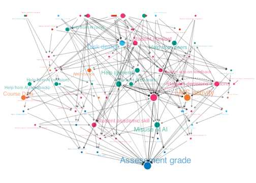
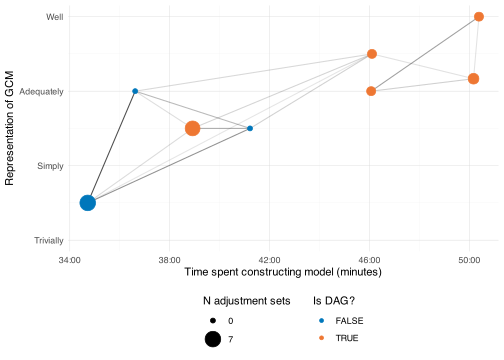
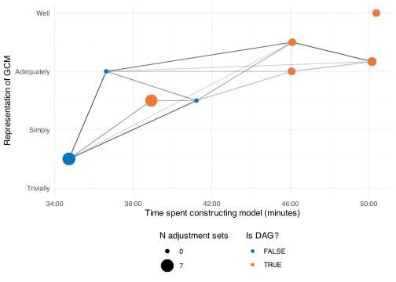
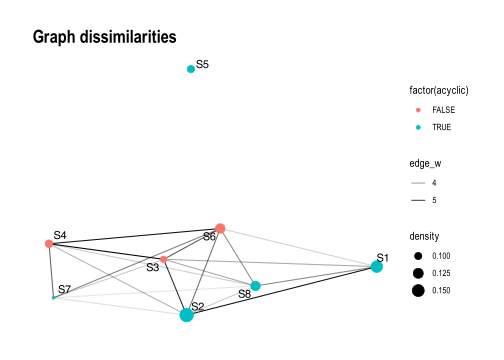
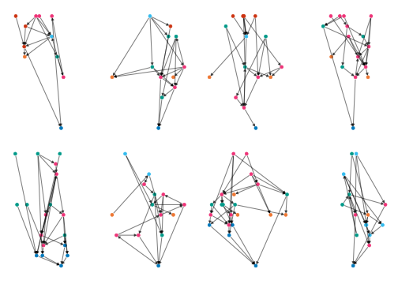
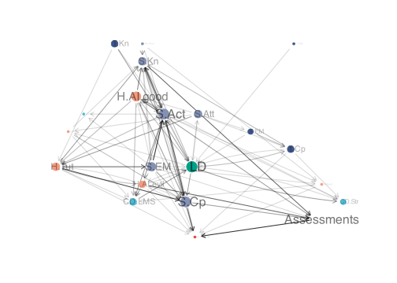
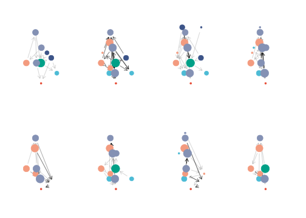
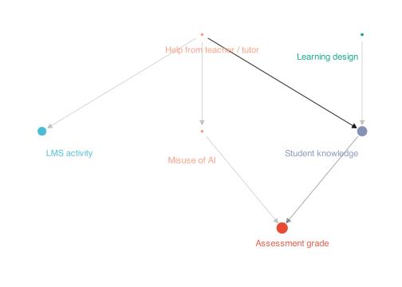

Code
options(device = svglite::svglite)
library(svglite)
library(tidyverse)
library(dagitty)
library(tidygraph)
library(scales)
library(patchwork)
library(ggpubfigs)
library(cowplot)options(device = svglite::svglite)
library(svglite)
library(tidyverse)
library(dagitty)
library(tidygraph)
library(scales)
library(patchwork)
library(ggpubfigs)
library(cowplot)to_duration <- function(x){
x |>
str_remove(":00$") |>
ms()
}
session_data_raw <- tibble::tribble(
~`Session`, ~Stat.familiarity, ~GCM.familiarity, ~GCM.validity, ~Tutorial.duration, ~Modelling.duration,
"S1 - R1", 1, 1L, 3, "4:39:00", "50:10:00",
"S1 - R2", 3, 2L, 3.5, NA, NA,
"S1 - R3", 1, 1L, 3, NA, NA,
"S2", 2, 2L, 3.5, "4:20:00", "46:06:00",
"S3", 2.2, 1L, 3, "5:53:00", "36:37:00",
"S4", 2, 3L, 1.5, "4:34:00", "34:43:00",
"S5", 2, 1L, 4, "2:45:00", "50:23:00",
"S6", 2, 2L, 2.5, "4:28:00", "41:13:00",
"S7", 2.75, 2L, 2.5, "5:00:00", "38:55:00",
"S8", 4, 2L, 3, "4:53:00", "46:04:00"
)
session_data <- tibble::tribble(
~`Model`, ~Stat.familiarity, ~GCM.familiarity, ~GCM.validity, ~Tutorial.duration, ~Modelling.duration,
"S1", 1.67, 1.33, 3.167, "4:39:00", "50:10:00",
"S2", 2, 2, 3.5, "4:20:00", "46:06:00",
"S3", 2.2, 1, 3, "5:53:00", "36:37:00",
"S4", 2, 3, 1.5, "4:34:00", "34:43:00",
"S5", 2, 1, 4, "2:45:00", "50:23:00",
"S6", 2, 2, 2.5, "4:28:00", "41:13:00",
"S7", 2.75, 2, 2.5, "5:00:00", "38:55:00",
"S8", 4, 2, 3, "4:53:00", "46:04:00"
) |>
mutate(across(ends_with("duration"), to_duration)) # CD: Course Data (both LMS and Course structure)
# CD.Str Course structure (usually the course data on graphs)
# CD.LMS: LMS activity data
# S. Student attribute. Subsets S.Kn knowledge, S.Cp capabilities, S.Att attribute that is generally unchangible (i.e. gender)
# T. Teacher attribute
# LD. Learning design aspect
# H. Help of some kind. (i.e. assistance)
# Use S.Kn for student knowledge, but S.Kn.Att for a sub component of knowledge
# .Act means "action" or "activity", where people do things or make decisions.
# S.Att.SocCap - social capital
# T.Aff.Integ - teacher (or student) acting with integrity (academic)
# LD.Task - assessment design quality
# T.Cp.Mark - teacher reliable marking
# T/S.Aff.WrkLd - teacher / student workload
dag_s1 <- dagitty('dag S1 {
CD [pos="-0.228,0.457"]
Grade [outcome,pos="-0.830,0.442"]
H [pos="0.285,-0.845"]
LD.Task [pos="-0.408,-0.241"]
S.Aff.Integ [pos="-0.202,-0.798"]
S.Att.SocCap [pos="-0.627,-1.067"]
S.Kn [exposure,pos="0.046,-0.298"]
S.Aff.WrkLd [pos="0.115,0.191"]
T.Aff.Integ [pos="-0.748,-0.410"]
T.Cp.Mark [pos="-1.079,-0.201"]
T.Aff.WrkLd [pos="-1.386,-0.453"]
H -> S.Kn
LD.Task -> CD
LD.Task -> T.Cp.Mark
S.Aff.Integ -> LD.Task
S.Att.SocCap -> H
S.Att.SocCap -> LD.Task
S.Att.SocCap -> T.Aff.Integ
S.Att.SocCap -> T.Cp.Mark
S.Kn -> LD.Task
S.Kn -> S.Aff.WrkLd
S.Aff.WrkLd -> Grade
T.Aff.Integ -> LD.Task
T.Aff.Integ -> T.Cp.Mark
T.Cp.Mark -> CD
T.Cp.Mark -> Grade
T.Aff.WrkLd -> T.Cp.Mark
}')
# plot(dag_s1)
# S.Act - student activity. Doing work
# T.Cp.Inst - teacher instruction (quality of)
# H.Peer - student peer learning / assistance
# T.Fb - teacher feedback
# S.SRL - student SRL
dag_s2 <- dagitty('dag S2 {
CD.LMS [pos="0.190,-0.154"]
CD.Str [pos="-1.216,-0.755"]
Grade [outcome,pos="-0.480,0.370"]
H.AI.evil [pos="-1.007,0.166"]
H.AI.good [pos="-1.043,-0.363"]
H.Peer [pos="-0.300,-0.561"]
H.Tut.Fb [pos="-1.245,-0.054"]
LD [pos="-0.670,-0.848"]
S.Act [pos="-0.608,-0.348"]
S.Cp.SRL [pos="-0.614,0.097"]
S.Kn [exposure,pos="-0.228,0.018"]
T.Cp.Inst [pos="0.073,-0.694"]
H.AI.evil -> Grade
H.AI.good -> CD.Str
H.AI.good -> S.Cp.SRL
H.AI.good -> S.Kn
H.Peer -> S.Kn
H.Tut.Fb -> H.AI.evil
H.Tut.Fb -> S.Cp.SRL
H.Tut.Fb -> S.Kn
LD -> CD.Str
LD -> H.AI.good
LD -> H.Peer
LD -> S.Act
LD -> T.Cp.Inst
S.Act -> CD.LMS
S.Act -> CD.Str
S.Act -> H.Tut.Fb
S.Act -> S.Cp.SRL
S.Act -> S.Kn
S.Cp.SRL -> Grade
S.Cp.SRL -> H.AI.evil
S.Kn -> Grade
S.Kn -> S.Cp.SRL
T.Cp.Inst -> S.Kn
}
')
# plot(dag_s2)
# T.KnSt - Teacher knowing students
# T.AIlit - Teacher AI literacy
# T.Act.UseAI - Teacher AI use
# T.KnSub - Teacher subject knowledge
# S.Act - Student activity, doing the work. Was "S: Course Materials" on graph
# H.Tut - Help from the tutor
# H.SubC - Help from the subject coordinator
# S.Act.Perf - Student performance on the task
# S.Cp.Aca - student academic skill
dag_s3 <- dagitty('dag S3 {
CD.LMS [pos="-0.156,0.899"]
CD.Str [pos="-1.134,0.874"]
Grade [outcome,pos="-0.670,0.870"]
H.AI [pos="0.472,-0.424"]
H.Peer [pos="-0.160,-0.215"]
H.Tut [pos="-0.003,-0.600"]
LD.Task [pos="-1.245,-0.050"]
S.Act [pos="-0.621,-0.571"]
S.Kn [exposure,pos="-0.706,-0.147"]
S.Cp.Aca [pos="0.305,0.083"]
S.Act.Perf [pos="-0.660,0.370"]
T.Act.UseAI [pos="-0.905,-0.032"]
T.Kn.AI [pos="-1.380,0.414"]
T.Kn.Ass [pos="-1.720,0.137"]
T.Kn.Sub [pos="-1.301,-0.830"]
T.Cp.KnStu [pos="-1.638,-0.366"]
H.AI -> H.Tut
H.AI -> S.Act.Perf
H.Peer -> CD.LMS
H.Peer -> S.Kn
H.Peer -> S.Cp.Aca
H.Tut -> CD.LMS
H.Tut -> S.Kn
LD.Task -> CD.Str
LD.Task -> S.Act.Perf
S.Act -> CD.LMS
S.Act -> S.Kn
S.Kn -> S.Act.Perf
S.Cp.Aca -> S.Act.Perf
S.Act.Perf -> Grade
S.Act.Perf -> H.Tut
T.Act.UseAI -> LD.Task
T.Kn.AI -> LD.Task
T.Kn.Ass -> LD.Task
T.Kn.Sub -> H.Tut
T.Kn.Sub -> LD.Task
T.Kn.Sub -> S.Act
T.Cp.KnStu -> LD.Task
T.Cp.KnStu -> S.Kn
}')
# plot(dag_s3)
# S4
# CD.Att - attendance
# S.Cp.Fb - Student feedback literacy
# S.Cp.EvJdg - Student evaluative judgement
# S.Kn.Prior - Base / prior knowledge
# S.Kn - Knowledge to be measured at end of sub
# S.Aff.MindSet - Student affective state: Effort / willingness / learning mindset
# S.Act.Fb - Student acting / taking on feedback
# S.Act.Frm - Student working on formative tasks
# S.Cp.Fb - Student learns from feedback
# S.Att.Nro - Student neuro-divergent
# S.Att.Hsk - Student attribute, help seeking
dag_s4 <- dagitty('dag S4 {
CD.Att [pos="-1.729,-0.248"]
CD.LMS [pos="-1.344,0.173"]
Grade [outcome,pos="-0.761,0.651"]
H.AI [pos="0.544,-0.025"]
H.Peer [pos="-0.016,-0.496"]
H.Tut [pos="-0.313,-0.694"]
S.Act.Fb [pos="-1.422,-0.686"]
S.Act.Frm [pos="-0.830,-0.686"]
S.Aff.MindSet [pos="-1.671,-1.290"]
S.Att.HSk [pos="0.292,-0.755"]
S.Att.Nro [pos="0.877,-1.078"]
S.Kn [exposure,pos="-0.889,-0.187"]
S.Cp.EvJdg [pos="-0.598,-1.261"]
S.Cp.Fb [pos="-1.026,-1.204"]
S.Kn.Prior [pos="0.014,-1.337"]
S.Cp.Fb [pos="-0.408,-0.172"]
S.Aff.WrkLd [pos="0.436,-1.200"]
H.AI -> Grade
H.AI -> S.Cp.Fb
H.Peer -> S.Cp.Fb
H.Tut -> S.Kn
S.Act.Fb -> S.Act.Frm
S.Act.Frm -> CD.LMS
S.Act.Frm -> S.Kn
S.Aff.MindSet -> CD.Att
S.Aff.MindSet -> S.Act.Fb
S.Aff.MindSet -> S.Act.Frm
S.Att.HSk -> H.Peer
S.Att.HSk -> H.Tut
S.Att.Nro -> H.AI
S.Att.Nro -> S.Att.HSk
S.Kn -> Grade
S.Kn -> S.Act.Fb
S.Cp.EvJdg -> S.Act.Fb
S.Cp.EvJdg -> S.Act.Frm
S.Cp.EvJdg -> S.Cp.Fb
S.Cp.Fb -> S.Act.Fb
S.Cp.Fb -> S.Act.Frm
S.Kn.Prior -> S.Act.Frm
S.Cp.Fb -> S.Kn
S.Aff.WrkLd -> H.AI
S.Aff.WrkLd -> S.Act.Frm
}')
# plot(dag_s4)
# S.Cp.Lrn - Student Learns, in this case used for "knowledge retention"
# S.Aff.Safe - Student feels safe
# S.Aff.Joy - Student is enjoying learning
# S.Aff.MindSet - Student attitude towards learning - change effort above
dag_s5 <- dagitty('dag S5 {
Grade [outcome,pos="-0.480,1.039"]
Grade.Exam [pos="0.105,0.590"]
Grade.Proc [pos="-0.663,0.489"]
Grade.Quiz [pos="-0.323,0.439"]
Grade.Ref [pos="-0.935,0.618"]
H.AI.Agent [pos="-1.308,0.931"]
H.AI.Fb [pos="-1.442,0.618"]
H.AI.Res [pos="-1.252,0.316"]
H.AI.Study [pos="0.472,0.079"]
H.AI.evil [pos="0.563,1.140"]
H.Ment [pos="-0.729,-0.801"]
H.Tut [pos="-0.186,-0.852"]
S.Aff.Joy [latent,pos="-0.130,-0.579"]
S.Aff.MindSet [latent,pos="-0.882,-0.334"]
S.Aff.Safe [latent,pos="-1.111,-0.453"]
S.Kn [exposure,pos="-0.284,-0.223"]
S.Cp.Aca [pos="-0.542,0.054"]
S.Cp.Lrn [exposure,pos="-0.045,0.054"]
Grade.Exam -> Grade
Grade.Proc -> Grade
Grade.Quiz -> Grade
Grade.Ref -> Grade
H.AI.Agent -> Grade.Ref
H.AI.Fb -> Grade.Ref
H.AI.Res -> Grade.Ref
H.AI.Study -> S.Cp.Lrn
H.AI.evil -> Grade.Proc
H.AI.evil -> Grade.Quiz
H.AI.evil -> S.Cp.Lrn
H.Ment -> S.Aff.Joy
H.Ment -> S.Aff.MindSet
H.Ment -> S.Aff.Safe
H.Ment -> S.Cp.Aca
H.Tut -> S.Aff.Joy
H.Tut -> S.Aff.MindSet
H.Tut -> S.Kn
H.Tut -> S.Cp.Aca
S.Aff.Joy -> S.Cp.Lrn
S.Aff.MindSet -> Grade.Ref
S.Aff.MindSet -> S.Kn
S.Aff.MindSet -> S.Cp.Aca
S.Aff.MindSet -> S.Cp.Lrn
S.Aff.Safe -> S.Aff.MindSet
S.Kn -> Grade.Proc
S.Kn -> Grade.Quiz
S.Kn -> S.Cp.Lrn
S.Cp.Aca -> Grade.Exam
S.Cp.Aca -> Grade.Proc
S.Cp.Lrn -> Grade.Exam
}')
dag_s6 <- dagitty('dag S6 {
CD.LMS [pos="-0.081,-1.053"]
CD.Str [pos="-0.444,-1.085"]
Grade [outcome,pos="-0.604,0.363"]
H [pos="-0.850,-0.352"]
H.AI.evil [pos="-0.176,-0.305"]
H.AI.good [pos="-0.111,-0.751"]
LD.AIguide [pos="0.223,-0.607"]
LD.Task [pos="-0.817,-0.916"]
S.Act.Fb.Post [pos="-1.366,-0.032"]
S.Act [pos="-0.617,-0.485"]
S.Act.Fb [pos="-0.454,-0.740"]
S.Att.Eq [pos="-1.275,-1.024"]
S.Kn [exposure,pos="-0.853,-0.690"]
S.Cp.Aca [pos="-1.000,-0.039"]
CD.Str -> LD.Task
Grade -> S.Act.Fb.Post
H -> Grade
H -> H.AI.evil
H -> S.Cp.Aca
H.AI.evil -> Grade
H.AI.good -> CD.LMS
H.AI.good <-> S.Act
LD.AIguide -> H.AI.evil
LD.AIguide -> H.AI.good
LD.Task -> S.Kn
LD.Task <-> S.Att.Eq
S.Act.Fb.Post -> S.Kn
S.Act.Fb.Post -> S.Cp.Aca
S.Act -> Grade
S.Act -> S.Act.Fb
S.Act.Fb -> H.AI.evil
S.Act.Fb -> H.AI.good
S.Act.Fb -> S.Kn
S.Att.Eq -> H
S.Kn -> S.Act
S.Cp.Aca -> Grade
}
')
# S.Kn.Coms - communication skill knowledge / writing / presentation
# S.Kn.Tech - Technical knowledge
# S.Kn.Interp - Interpretation knowledge / skill
# S.Kn.Prior - THis is 'skill' on the original, changed to better match how it is described in other diagrams and this transcript
# S.Act.AIstrat - the student's use choice / strategy for using AI. Higher is a more moral choice.
dag_s7 <- dagitty('dag S7 {
CD.Att [pos="-0.944,-0.114"]
CD.LMS [pos="-0.933,-0.204"]
CD.LMS.code [pos="-1.142,-0.011"]
CD.LMS.write [pos="-0.934,-0.005"]
Grade [outcome,pos="-1.046,0.161"]
Grade.Coms [pos="-1.045,0.059"]
Grade.Interp [pos="-0.989,0.061"]
Grade.Tech [pos="-1.091,0.057"]
H.AI.Fb [pos="-1.111,-0.190"]
H.AI.Study [pos="-1.124,-0.130"]
H.AI.evil.code [pos="-1.068,-0.011"]
H.AI.evil.write [pos="-1.012,-0.014"]
H.other.evil [pos="-0.969,-0.034"]
S.Act.AIstrat [pos="-1.059,-0.164"]
S.Act.Time [pos="-1.020,-0.165"]
S.Aff.MindSet [pos="-1.038,-0.282"]
S.Kn.Coms [exposure,pos="-1.042,-0.040"]
S.Kn.Interp [exposure,pos="-0.990,-0.068"]
S.Kn.Prior [pos="-0.977,-0.267"]
S.Kn.Tech [exposure,pos="-1.091,-0.066"]
S.Aff.WrkLd [pos="-1.087,-0.276"]
Grade.Coms -> Grade
Grade.Interp -> Grade
Grade.Tech -> Grade
H.AI.Fb -> S.Kn.Coms
H.AI.Fb -> S.Kn.Interp
H.AI.Study -> S.Kn.Tech
H.AI.evil.code -> CD.LMS.code
H.AI.evil.code -> Grade.Tech
H.AI.evil.write -> CD.LMS.write
H.AI.evil.write -> Grade.Coms
H.AI.evil.write -> Grade.Interp
H.other.evil -> CD.LMS.write
H.other.evil -> Grade
S.Act.AIstrat -> H.AI.Fb
S.Act.AIstrat -> H.AI.Study
S.Act.AIstrat -> H.AI.evil.code
S.Act.AIstrat -> H.AI.evil.write
S.Act.Time -> CD.Att
S.Act.Time -> CD.LMS
S.Act.Time -> H.other.evil
S.Act.Time -> S.Act.AIstrat
S.Aff.MindSet -> CD.LMS
S.Aff.MindSet -> H.other.evil
S.Aff.MindSet -> S.Act.AIstrat
S.Aff.MindSet -> S.Act.Time
S.Kn.Coms -> Grade.Coms
S.Kn.Coms <-> S.Kn.Interp
S.Kn.Interp -> Grade.Interp
S.Kn.Prior -> H.other.evil
S.Kn.Prior -> S.Kn.Coms
S.Kn.Prior -> S.Kn.Interp
S.Kn.Prior -> S.Kn.Tech
S.Kn.Tech -> Grade.Tech
S.Kn.Tech -> S.Kn.Interp
S.Aff.WrkLd -> S.Act.AIstrat
S.Aff.WrkLd -> S.Act.Time
}')
# S.SRL - using this, but was referred to as "individual capability" in the original
# S.GrpWrk - students' collaboration ability / capability
dag_s8 <- dagitty('dag S8 {
CD.LMS [pos="-1.617,-1.199"]
Grade [outcome,pos="-0.416,0.274"]
H [pos="0.345,-0.828"]
H.AI.Agent [pos="-0.520,-1.045"]
H.AI.evil [pos="-0.759,-0.884"]
H.Tut [pos="0.213,-1.306"]
LD.Task [pos="-1.134,-0.983"]
LD.Task.Code [pos="-1.867,-0.480"]
LD.Task.Grp [pos="-1.249,-0.224"]
LD.Task.Other [pos="-0.591,-0.662"]
LD.Task.Prac [pos="-1.460,-0.550"]
LD.Task.Write [pos="-1.152,-0.598"]
S.Cp.Grp [exposure,pos="-0.859,-0.142"]
S.Cp.Ind [exposure,pos="-0.405,-0.162"]
S.Kn [exposure,pos="0.166,-0.142"]
CD.LMS -> LD.Task.Code
CD.LMS -> LD.Task.Prac
CD.LMS -> LD.Task.Write
H -> S.Cp.Grp
H -> S.Cp.Ind
H -> S.Kn
H.AI.Agent -> CD.LMS
H.AI.Agent -> H
H.AI.evil -> H
H.AI.evil -> LD.Task
H.Tut -> CD.LMS
H.Tut -> H
LD.Task -> LD.Task.Code
LD.Task -> LD.Task.Prac
LD.Task -> LD.Task.Write
LD.Task.Code -> LD.Task.Grp
LD.Task.Grp -> S.Cp.Grp
LD.Task.Other -> S.Cp.Grp
LD.Task.Other -> S.Cp.Ind
LD.Task.Other -> S.Kn
LD.Task.Prac -> LD.Task.Grp
LD.Task.Write -> LD.Task.Grp
S.Cp.Grp -> Grade
S.Cp.Ind -> Grade
S.Kn -> Grade
}
')Data imported as DAGitty objects, but need to be in tidygraph format for many calculations and visualisations.
# helper to get back door paths straight away - not working for all graphs yet
path_to_edges <- function(path) {
tokens <- str_split(path, " ")[[1]]
nodes <- tokens[c(TRUE, FALSE)]
arrows <- tokens[c(FALSE, TRUE)]
tibble(
from = ifelse(arrows == "->", nodes[-length(nodes)], nodes[-1]),
to = ifelse(arrows == "->", nodes[-1], nodes[-length(nodes)])
)
}
open_backdoor_edgelist <- function(dag) {
as_tibble(paths(backDoorGraph(dag), limit = 1e4)) |>
filter(open) |>
pull(paths) |>
map_df(path_to_edges) |>
distinct()
}dag_to_tidy_graph <- function(dag){
# Extract edges
edges <- as.data.frame( dagitty::edges(dag) )
edges$edge_w = 1
nodes <- tibble(name = unique(c(edges$v, edges$w)))
# Build tidygraph
tg <- tbl_graph(nodes = nodes, edges = edges, directed = TRUE)
return(tg)
}tdag_s1 <- dag_to_tidy_graph(dag_s1)
tdag_s2 <- dag_to_tidy_graph(dag_s2)
tdag_s3 <- dag_to_tidy_graph(dag_s3)
tdag_s4 <- dag_to_tidy_graph(dag_s4)
tdag_s5 <- dag_to_tidy_graph(dag_s5)
tdag_s6 <- dag_to_tidy_graph(dag_s6)
tdag_s7 <- dag_to_tidy_graph(dag_s7)
tdag_s8 <- dag_to_tidy_graph(dag_s8)
quick_list_of_all_nodes <- unique(c(tdag_s1 |> pull(name),
tdag_s2 |> pull(name),
tdag_s3 |> pull(name),
tdag_s4 |> pull(name),
tdag_s5 |> pull(name),
tdag_s6 |> pull(name),
tdag_s7 |> pull(name),
tdag_s8 |> pull(name)
)
)Coding the nodes into rough groups. There are two levels:
node_group is the first aggregation into slightly coarser groups of nodes.node_type is an even more coarse grouping into a handful of types.node_nice_name is a longer more explanatory name for plotting and putting in tablesname_node_nice_name <- tribble(
~name, ~nice_name,
"CD", "Any system data",
"CD.Att", "Attendance",
"CD.LMS", "LMS activity",
"CD.LMS.code", "Code artifacts",
"CD.LMS.write", "Writing artifacts",
"CD.Str", "Course Data",
"Grade", "Assessment grade",
"Grade.Coms", "Mark - Communication",
"Grade.Exam", "Mark - Exam",
"Grade.Interp", "Mark - Interpretation",
"Grade.Proc", "Mark - Learning process",
"Grade.Quiz", "Mark - Quiz",
"Grade.Ref", "Mark - Learning reflection",
"Grade.Tech", "Mark - Technical",
"H", "Help (general)",
"H.AI", "Help from AI (any)",
"H.AI.Agent", "Help from AI (agent)",
"H.AI.evil", "Misuse of AI",
"H.AI.evil.code", "Misuse of AI (code)",
"H.AI.evil.write", "Misuse from AI (write)",
"H.AI.Fb", "Help from AI (feedback)",
"H.AI.good", "Help from AI (to learn)",
"H.AI.Res", "Help from AI (research)",
"H.AI.Study", "Help from AI (revision)",
"H.Ment", "Help from mentor",
"H.other.evil", "Cheating - non-AI",
"H.Peer", "Help from peers",
"H.Tut", "Help from teacher / tutor",
"H.Tut.Fb", "Feedback from teacher / tutor",
"LD", "Learning design",
"LD.AIguide", "Guidance on AI use",
"LD.Task", "Task design",
"LD.Task.Code", "Coding task design",
"LD.Task.Grp", "Groupwork task design",
"LD.Task.Other", "Other task design",
"LD.Task.Prac", "Practical task design",
"LD.Task.Write", "Writing task design",
"S.Act", "Student decisions / actions",
"S.Act.AIstrat", "Student AI strategy",
"S.Act.Fb", "Student acts on feedback",
"S.Act.Fb.Post", "Student acts on feedback between subjects",
"S.Act.Frm", "Student does formative tasks",
"S.Act.Perf", "Student performance on task",
"S.Act.Time", "Student commits time",
"S.Aff.Integ", "Student acting with integrity",
"S.Aff.Joy", "Student enjoyment",
"S.Aff.MindSet", "Student mindset",
"S.Aff.Safe", "Student feels safe",
"S.Aff.WrkLd", "Student workload pressure",
"S.Att.Eq", "Student equity group",
"S.Att.HSk", "Student seeks help",
"S.Att.Nro", "Student neuro-divergent",
"S.Att.SocCap", "Student social capital",
"S.Cp.Aca", "Student academic skill",
"S.Cp.EvJdg", "Student evaluative judgement",
"S.Cp.Fb", "Student feedback literacy",
"S.Cp.Grp", "Student groupwork capability",
"S.Cp.Ind", "Student individual work capability",
"S.Cp.Lrn", "Student metacognative learning capabilities",
"S.Cp.SRL", "Student SRL",
"S.Kn", "Student subject knowledge",
"S.Kn.Coms", "Student communications knowledge",
"S.Kn.Interp", "Student interpretation knowledge",
"S.Kn.Prior", "Student prior knowledge",
"S.Kn.Tech", "Student technical knowledge",
"T.Act.UseAI", "Teacher use of AI",
"T.Aff.Integ", "Teacher acts with integrity",
"T.Aff.WrkLd", "Teacher workload pressure",
"T.Cp.Inst", "Teacher instruction quality",
"T.Cp.KnStu", "Teacher knows students",
"T.Cp.Mark", "Teacher reliably marks",
"T.Kn.AI", "Teacher AI literacy",
"T.Kn.Ass", "Teacher assessment literacy",
"T.Kn.Sub", "Teacher subject knowledge"
)
node_group_nice_name <- tribble(
~node_group, ~nice_name,
"Assessments", "Preliminary assessments",
"CD.Att", "Student attendance",
"CD.LMS", "LMS activity",
"CD.Str", "Course Data",
"Grade.Outcome", "Assessment grade",
"H.AI.evil", "Misuse of AI",
"H.AI.good", "Help from AI",
"H.Cheat", "Cheating - non-AI",
"H.Peer", "Help from peers",
"H.Tut", "Help from teacher / tutor",
"LD", "Learning design",
"S.Act", "Student decisions / actions",
"S.Att", "Student attributes",
"S.Cp", "Student metacognitive skill",
"S.EM", "Student emotion / motivation",
"S.Kn", "Student knowledge",
"S.Kn.Prior", "Student prior knowledge",
"T.Act", "Teacher use of AI",
"T.Cp", "Teacher capabilities",
"T.EM", "Teacher emotion / motivation",
"T.Kn", "Teacher knowledge"
)code_node_group <- function(v) {
case_when(
# Course data - Str, LMS --------------
v == "CD" ~ "CD.Str", # was blending LMS and Str, but original graph was more about structure
str_detect(v, "CD\\.LMS") ~ "CD.LMS",
v == "CD.Att" ~ "CD.Att",
v == "CD.Str" ~ "CD.Str",
# Grade data --------------------------
v == "Grade" ~ "Grade.Outcome",
str_detect(v, "Grade\\.") ~ "Assessments",
# Kinds of help -----------------------
# - - - Help from teacher or tutor
v == "H" ~ "H.Tut", # closest match for the only broad category one
v == "H.Tut" ~ "H.Tut",
v == "H.Ment" ~ "H.Tut",
v == "H.Tut.Fb" ~ "H.Tut",
# - - - Help from peers
v == "H.Peer" ~ "H.Peer",
# - - - Help from AI (good or bad usage)
str_detect(v, "H\\.AI\\.evil") ~ "H.AI.evil",
str_detect(v, "H\\.AI") ~ "H.AI.good",
# - - - Other nefarious help (i.e. cheating)
v == "H.other.evil" ~ "H.Cheat",
# Learning Design --------------------
str_detect(v, "^LD") ~ "LD",
# Student activity -------------------
str_detect(v, "^S\\.Act") ~ "S.Act",
# Student attributes (generally unchangable) ---
str_detect(v, "^S\\.Att") ~ "S.Att",
# Student metacognitive capability (metacognition)
str_detect(v, "^S\\.Cp") ~ "S.Cp",
# Student emotion / motivation
str_detect(v, "^S\\.Aff") ~ "S.EM",
# Student knowledge (cognition)
v == "S.Kn.Prior" ~ "S.Kn.Prior", # Prior knowledge treated as it's own node
str_detect(v, "^S\\.Kn") ~ "S.Kn",
# Teacher knowledge (cognition)
str_detect(v, "^T\\.Kn") ~ "T.Kn",
# Teacher capabilities (metacognition)
str_detect(v, "^T\\.Cp") ~ "T.Cp",
# Teacher emotion / motivation
str_detect(v, "^T\\.Aff") ~ "T.EM",
# Teacher actions / decisions
str_detect(v, "^T\\.Act") ~ "T.Act",
TRUE ~ v
)
}code_node_type <- function(n) {
fl <- str_extract(n, "^.{1}")
case_when(
fl == "S" ~ "Student",
fl == "T" ~ "Teacher",
fl == "C" ~ "Learning data",
fl == "H" ~ "Help",
fl == "L" ~ "Learning design",
fl == "G" ~ "Assessment data"
) |>
factor(levels = c("Assessment data", "Learning data", "Learning design", "Teacher", "Help", "Student"))
}From the node groups, describe how easy (or not) they are to measure. This is in three levels:
By direct proxy I mean one step away in the causal graph. So if \(X,Y\) is not measurably, but \(Z\) is then \(X\rightarrow Z\) would mean that \(X\) is measurable by proxy. However if at best we can only justify \(X \rightarrow Y \rightarrow Z\) then \(X\) is intangible.
# Node measurability function
# old_code_node_measurability <- function(ng) {
# case_when(
# ng == "Grade" ~ "Directly",
# str_detect(ng, "^CD") ~ "Directly",
# str_detect(ng, "^S\\.Att") ~ "Directly",
# str_detect(ng, "^LD") ~ "Directly",
# str_detect(ng, "\\.Act") ~ "Proxy",
# str_detect(ng, "\\.Kn") ~ "Proxy",
# str_detect(ng, "\\.Cp") ~ "Proxy",
# str_detect(ng, "WrkLd") ~ "Proxy", # going to cull - Wrkld is really the perceived stress - an affective state
# str_detect(ng, "^H") ~ "Proxy",
# str_detect(ng, "EM$") ~ "Intangible"
# ) |>
# factor(levels = c("Directly", "Proxy", "Intangible"))
# }
code_node_measurability <- function(node) {
case_when(
str_detect(node, "^CD") ~ "Traced",
str_detect(node, "^Grade") ~ "Traced",
str_detect(node, "^H.*code$") ~ "Traced",
str_detect(node, "^H.*write$") ~ "Traced",
str_detect(node, "^H.*Agent$") ~ "Traced",
str_detect(node, "^H") ~ "Untraced",
str_detect(node, "^LD") ~ "Traced",
str_detect(node, "^S\\.Att") ~ "Traced",
str_detect(node, "^S\\.Act") ~ "Untraced",
str_detect(node, "^S\\.Aff") ~ "Untraced",
str_detect(node, "^S\\.Cp") ~ "Untraced",
str_detect(node, "^S\\.Kn") ~ "Untraced",
str_detect(node, "^T") ~ "Untraced"
) |>
factor(levels = c("Traced", "Untraced"))
}Convention is that these all start with g_ and accept a tidygraph object as input.
# exposures(dag_s1)
library(igraph)
library(dagitty)
g_edgelist <- function(g){
# tidygraph to tibble of edges
g %E>%
as_tibble() %>%
mutate(
from = g %N>% pull(name) %>% .[from],
to = g %N>% pull(name) %>% .[to]
) %>%
select(from, to)
}
g_merge_nodes <- function(g, regex_from, string_to, no.self.loops = TRUE) {
# merges nodes in a graph by renaming edgelist
g_el <- g_edgelist(g)
g_el_m <- g_el |>
mutate(from = str_replace(from, regex_from, string_to),
to = str_replace(to, regex_from, string_to)) |>
distinct()
tbl_graph(edges = g_el_m)
}
# same but for dags
dag_merge_nodes <- function(dag, mapping) {
# mapping is a named list, like: c("Old.var" = "Merged.var", "Old.var2" = "Merged.var")
g <- graph_from_data_frame(dagitty::edges(dag))
old_names <- V(g)$name
# Replace names using mapping if present, else keep original
new_names <- ifelse(old_names %in% names(mapping),
mapping[old_names],
old_names)
V(g)$name <- unname(new_names)
new_g <- simplify(g, remove.loops = TRUE, remove.multiple = TRUE)
# Convert back to dagitty
edges_m <- igraph::as_data_frame(new_g, what="edges")
dag_str <- paste0("dag { ", paste0(edges_m$from, " -> ", edges_m$to, collapse="; "), " }")
g_m <- dagitty(dag_str)
g_m
}
g_get_adjustment_sets <- function(g, exposure = "S.Kn", outcome = "Grade") {
if (!is_acyclic(as.igraph(g))) {
return(list("Cyclic" = "No adjustment sets"))
}
# Extract edges
edges <- g_edgelist(g)
# Build dagitty syntax
edges_str <- edges %>%
mutate(rel = paste0(from, " -> ", to)) %>%
pull(rel)
dagitty_str <- paste("dag {", paste(edges_str, collapse = "\n "), "}", sep="\n")
dagitty_obj <- dagitty(dagitty_str)
# Compute adjustment sets
sets <- adjustmentSets(dagitty_obj, exposure = exposure, outcome = outcome)
as.list(sets)
}# would like pagerank with "Grade" excluded
g_node_metrics <- function(g) {
pagerank_no_outcome <-
g %N>%
filter(name != "Grade") |>
mutate(pagerank_no_outcome = centrality_pagerank(damping = 0.85)) |>
as_tibble() |>
select(name, pagerank_no_outcome)
g %N>%
mutate(
node_w = 1,
node_group = code_node_group(name),
node_type = code_node_type(name),
measurability = code_node_measurability(name),
degree = centrality_degree(),
btw = centrality_betweenness(),
btw_rank = rank(-btw, ties.method = "min"), # rank (highest = 1)
btw_rel_rank = (btw_rank - 1) / (n() - 1),
btw_rel = 1 - btw_rel_rank,
eigen = centrality_eigen(),
pagerank = centrality_pagerank(damping = 0.5) # lowers the influence of sinks
) |>
as_tibble() |>
left_join(pagerank_no_outcome, by = "name") |>
mutate(pagerank_no_outcome = replace_na(pagerank_no_outcome, 0))
}g_summary_metrics <- function(g){
pagerank_no_outcome <-
g %N>%
filter(name != "Grade") |>
mutate(pagerank_no_outcome = centrality_pagerank(damping = 0.5)) |>
as_tibble() |>
select(name, pagerank_no_outcome)
n.df <- g %N>%
mutate(
pgrnk = centrality_pagerank(damping = 0.5),
ng = code_node_group(name),
m = code_node_measurability(name)) |>
as_tibble() |>
left_join(pagerank_no_outcome, by = "name")
p_traced <- mean(n.df$m == "Traced")
p_untraced <- mean(n.df$m == "Untraced")
pgrnk_traced <- sum(n.df |> filter(m == "Traced") |> pull(pgrnk))
pgrnk_untraced <- sum(n.df |> filter(m == "Untraced") |> pull(pgrnk))
pgrnk_no_outcome_traced <- sum(n.df |> filter(m == "Traced") |> pull(pagerank_no_outcome))
pgrnk_no_outcome_untraced <- sum(n.df |> filter(m == "Untraced") |> pull(pagerank_no_outcome))
graph_metrics <- list(
order = gorder(g), # number of nodes
size = gsize(g), # number of edges
density = edge_density(g),
diameter = diameter(g), # longest shortest path
mean_path = mean_distance(g),
clustering= transitivity(g, type = "global"),
acyclic = igraph::is_acyclic(as.igraph(g)),
p_traced = p_traced,
p_untraced = p_untraced,
pgrnk_traced = pgrnk_traced,
pgrnk_untraced = pgrnk_untraced,
pgrnk_no_outcome_traced = pgrnk_no_outcome_traced,
pgrnk_no_outcome_untraced = pgrnk_no_outcome_untraced
)
graph_metrics
}Idea - a function to compute an edge score for each edge in all the graphs. - Score from 0 to 1 based on the proportion of times the edge is included, WHEN both nodes are present. - This is then multiplied by -1 IF there is disagreement about the direction (might need to be sufficient? i.e. if only 1 of 8 thinks its the other way then this might be a bit extreem) - Would also be nice to have if the path is in the set of backdoor paths
tdags <- list(tdag_s1, tdag_s2, tdag_s3, tdag_s4,
tdag_s5, tdag_s6, tdag_s7, tdag_s8)
g_labelled_edgelist <- function(g) {
m <- as.character(substitute(g)) |>
str_remove("^tdag_")
g_edgelist(g) |>
mutate(Model = m) |>
select(Model, everything())
}
g_labelled_nodelist <- function(g) {
m <- as.character(substitute(g)) |>
str_remove("^tdag_")
g %N>%
as_tibble() |>
select(name) |>
mutate(Model = m) |>
select(Model, everything())
}
g_possible_edges <- function(g) {
m <- as.character(substitute(g)) |>
str_remove("^tdag_")
g_labelled_nodelist(g) |>
rename(from = name) |>
mutate(Model = m) |>
cross_join(g_labelled_nodelist(g) |>
select(-Model) |>
rename(to = name))
}
all_possible_edges <- bind_rows(
g_possible_edges(tdag_s1),
g_possible_edges(tdag_s2)
) |>
bind_rows(g_possible_edges(tdag_s3)) |>
bind_rows(g_possible_edges(tdag_s4)) |>
bind_rows(g_possible_edges(tdag_s5)) |>
bind_rows(g_possible_edges(tdag_s6)) |>
bind_rows(g_possible_edges(tdag_s7)) |>
bind_rows(g_possible_edges(tdag_s8))
max_possible_edges <- all_possible_edges |>
filter(from != to) |>
count(from, to) |>
rename(max_n = n)
all_nodes <- bind_rows(g_labelled_nodelist(tdag_s1),
g_labelled_nodelist(tdag_s2)) |>
bind_rows(g_labelled_nodelist(tdag_s3)) |>
bind_rows(g_labelled_nodelist(tdag_s4)) |>
bind_rows(g_labelled_nodelist(tdag_s5)) |>
bind_rows(g_labelled_nodelist(tdag_s6)) |>
bind_rows(g_labelled_nodelist(tdag_s7)) |>
bind_rows(g_labelled_nodelist(tdag_s8))
all_edges <- bind_rows(g_labelled_edgelist(tdag_s1),
g_labelled_edgelist(tdag_s2)) |>
bind_rows(g_labelled_edgelist(tdag_s3)) |>
bind_rows(g_labelled_edgelist(tdag_s4)) |>
bind_rows(g_labelled_edgelist(tdag_s5)) |>
bind_rows(g_labelled_edgelist(tdag_s6)) |>
bind_rows(g_labelled_edgelist(tdag_s7)) |>
bind_rows(g_labelled_edgelist(tdag_s8))
reverses <- tibble(Model = all_edges$Model, from = all_edges$to, to = all_edges$from)
g_all_descendants_edge_list <- function(g, m) {
# Get descendant edges
expanded <- distances(g) < Inf
closure_edges <- which(expanded, arr.ind = TRUE)
expanded_edges <- data.frame(
Model = m,
from = V(g)[closure_edges[,1]]$name,
to = V(g)[closure_edges[,2]]$name
) |> dplyr::filter(from != to)
return(expanded_edges)
}
distances(tdag_s1) < Inf H LD.Task S.Aff.Integ S.Aff.WrkLd S.Att.SocCap S.Kn T.Aff.Integ
H TRUE TRUE TRUE TRUE TRUE TRUE TRUE
LD.Task TRUE TRUE TRUE TRUE TRUE TRUE TRUE
S.Aff.Integ TRUE TRUE TRUE TRUE TRUE TRUE TRUE
S.Aff.WrkLd TRUE TRUE TRUE TRUE TRUE TRUE TRUE
S.Att.SocCap TRUE TRUE TRUE TRUE TRUE TRUE TRUE
S.Kn TRUE TRUE TRUE TRUE TRUE TRUE TRUE
T.Aff.Integ TRUE TRUE TRUE TRUE TRUE TRUE TRUE
T.Aff.WrkLd TRUE TRUE TRUE TRUE TRUE TRUE TRUE
T.Cp.Mark TRUE TRUE TRUE TRUE TRUE TRUE TRUE
CD TRUE TRUE TRUE TRUE TRUE TRUE TRUE
Grade TRUE TRUE TRUE TRUE TRUE TRUE TRUE
T.Aff.WrkLd T.Cp.Mark CD Grade
H TRUE TRUE TRUE TRUE
LD.Task TRUE TRUE TRUE TRUE
S.Aff.Integ TRUE TRUE TRUE TRUE
S.Aff.WrkLd TRUE TRUE TRUE TRUE
S.Att.SocCap TRUE TRUE TRUE TRUE
S.Kn TRUE TRUE TRUE TRUE
T.Aff.Integ TRUE TRUE TRUE TRUE
T.Aff.WrkLd TRUE TRUE TRUE TRUE
T.Cp.Mark TRUE TRUE TRUE TRUE
CD TRUE TRUE TRUE TRUE
Grade TRUE TRUE TRUE TRUEall_descendants <-
bind_rows(
g_all_descendants_edge_list(tdag_s1, "s1"),
g_all_descendants_edge_list(tdag_s2, "s2"),
) |>
bind_rows(g_all_descendants_edge_list(tdag_s3, "s3")) |>
bind_rows(g_all_descendants_edge_list(tdag_s4, "s4")) |>
bind_rows(g_all_descendants_edge_list(tdag_s5, "s5")) |>
bind_rows(g_all_descendants_edge_list(tdag_s6, "s6")) |>
bind_rows(g_all_descendants_edge_list(tdag_s7, "s7")) |>
bind_rows(g_all_descendants_edge_list(tdag_s8, "s8")) |>
as_tibble()
all_edges_summary <-
all_possible_edges |>
filter(from != to) |>
left_join(all_edges |> mutate(in_graph = TRUE)) |>
mutate(in_graph = replace_na(in_graph, FALSE)) |>
left_join(all_descendants |> mutate(descendant = TRUE)) |>
mutate(descendant = replace_na(descendant, FALSE))
all_edges_sum <-
all_edges_summary |>
group_by(from, to) |>
summarise(n = sum(in_graph),
n_desc = sum(descendant)) |>
arrange(desc(n)) |>
ungroup()
all_edges_with_metrics <-
all_edges_sum |>
filter(n > 0) |>
inner_join(max_possible_edges) |>
mutate(
edge_p_w = n / max_n,
edge_dp_w = n_desc / max_n) |>
mutate(edge_w = n)
# edge_not_chosen <-
# all_possible_edges |>
# inner_join(edges_with_metrics |>
# filter(edge_p_w < 1) , relationship = "many-to-many") |>
# anti_join(all_edges) |>
# select(Model, from, to) |>
# distinct() |>
# left_join(
# all_descendants |>
# # anti_join(all_edges) |>
# mutate(is_descendant = TRUE)) |>
# mutate(is_descendant = replace_na(is_descendant, FALSE))
# edges_with_metrics <-
# edges_with_metrics |>
# left_join(edge_not_chosen |>
# filter(is_descendant) |>
# group_by(from, to) |>
# summarise(n_mediated = sum(is_descendant))) |>
# mutate(n_mediated = replace_na(n_mediated, 0)) |>
# distinct()
switches <- inner_join(all_edges, reverses, by = c("from", "to"),
relationship = "many-to-many") |>
arrange(Model.x)
edges_with_metrics <-
all_edges_with_metrics |>
left_join(switches |>
select(from, to) |> mutate(switched = "contested")) |>
mutate(switched = replace_na(switched, "aligned"))count_paths <- function(dag) {
tibble(
total = nrow(as_tibble(paths(dag, limit = 1e4))),
backdoor = nrow(as_tibble(paths(backDoorGraph(dag), limit = 1e4))),
frontdoor = nrow(as_tibble(paths(dag, directed = TRUE, limit = 1e4)))
)
}library(ggraph)
merged_edges <- g_edgelist(tdag_s1) |>
bind_rows(g_edgelist(tdag_s2)) |>
bind_rows(g_edgelist(tdag_s3)) |>
bind_rows(g_edgelist(tdag_s4)) |>
bind_rows(g_edgelist(tdag_s5)) |>
bind_rows(g_edgelist(tdag_s6)) |>
bind_rows(g_edgelist(tdag_s7)) |>
bind_rows(g_edgelist(tdag_s8)) |>
count(from, to) |> ungroup() |> rename(edge_w = n) |>
inner_join(edges_with_metrics)
merged_nodes <- tdag_s1 %N>% as_tibble() |>
bind_rows(tdag_s2 %N>% as_tibble()) |>
bind_rows(tdag_s3 %N>% as_tibble()) |>
bind_rows(tdag_s4 %N>% as_tibble()) |>
bind_rows(tdag_s5 %N>% as_tibble()) |>
bind_rows(tdag_s6 %N>% as_tibble()) |>
bind_rows(tdag_s7 %N>% as_tibble()) |>
bind_rows(tdag_s8 %N>% as_tibble()) |>
count(name) |> ungroup() |> rename(node_w = n) |>
mutate(node_group = code_node_group(name)) |>
mutate(node_type = code_node_type(name)) |>
mutate(measurable = code_node_measurability(name)) |>
left_join(name_node_nice_name, by = "name")
# cognitive, metacognitive, emotion / motivation, collaboration
merged_all_graph <- tbl_graph(nodes = merged_nodes, edges = merged_edges)
# View(merged_nodes |> arrange(name))This is based on the coding of the nodes into node groups.
g_coursen_dag_by_ng <- function(g){
new_nodes <- g %N>%
as_tibble() |>
mutate(name = code_node_group(name),
node_type = code_node_type(name)) |>
count(name, node_type) |>
rename(node_w = n) |>
mutate(measurability = code_node_measurability(name))
new_edges <- g |>
g_edgelist() |>
mutate(across(from:to, code_node_group)) |>
count(from, to) |>
rename(edge_w = n)
tbl_graph(nodes = new_nodes, edges = new_edges)
}all_paths_summary <- tibble(
Model = str_c("S", 1:8),
DAG = list(dag_s1, dag_s2, dag_s3, dag_s4, dag_s5, dag_s6, dag_s7, dag_s8)
) %>%
mutate(
counts = map(DAG, ~ count_paths(.x))
) %>%
unnest(counts)
all_paths <- tibble(
Model = str_c("S", 1:8),
Paths.df = list(
as_tibble(paths(dag_s1, limit = 5000)),
as_tibble(paths(dag_s2, limit = 5000)),
as_tibble(paths(dag_s3, limit = 5000)),
as_tibble(paths(dag_s4, limit = 5000)),
as_tibble(paths(dag_s5, limit = 5000)),
as_tibble(paths(dag_s6, limit = 5000)),
as_tibble(paths(dag_s7, limit = 5000)),
as_tibble(paths(dag_s8, limit = 5000))
)) |>
mutate(
n_paths = map_int(Paths.df, nrow),
n_open = map_int(Paths.df, ~sum(pull(.,open))),
p_open = map_dbl(Paths.df, ~mean(pull(.,open)))
)
dag_complexity_metrics <-
bind_cols(tibble(Model = "S1"),
g_summary_metrics(tdag_s1) |>
as_tibble()) |>
bind_rows(
bind_cols(tibble(Model = "S2"),
g_summary_metrics(tdag_s2) |>
as_tibble())
) |>
bind_rows(
bind_cols(tibble(Model = "S3"),
g_summary_metrics(tdag_s3) |>
as_tibble())
) |>
bind_rows(
bind_cols(tibble(Model = "S4"),
g_summary_metrics(tdag_s4) |>
as_tibble())
) |>
bind_rows(
bind_cols(tibble(Model = "S5"),
g_summary_metrics(tdag_s5) |>
as_tibble())
) |>
bind_rows(
bind_cols(tibble(Model = "S6"),
g_summary_metrics(tdag_s6) |>
as_tibble())
) |>
bind_rows(
bind_cols(tibble(Model = "S7"),
g_summary_metrics(tdag_s7) |>
as_tibble())
) |>
bind_rows(
bind_cols(tibble(Model = "S8"),
g_summary_metrics(tdag_s8) |>
as_tibble())
) |>
inner_join(
tibble(
Model = str_c("S", 1:8),
n_adj_sets = map_int(list(dag_s1, dag_s2, dag_s3, dag_s4,
dag_s5, dag_s6, dag_s7, dag_s8),
~length(adjustmentSets(.)))
), by = "Model"
) |>
inner_join(all_paths_summary, by = "Model")all_nodes_with_metrics <- g_node_metrics(tdag_s1) |>
mutate(Model = "S1") |>
bind_rows(
g_node_metrics(tdag_s2) |>
mutate(Model = "S2")
) |>
bind_rows(
g_node_metrics(tdag_s3) |>
mutate(Model = "S3")
) |>
bind_rows(
g_node_metrics(tdag_s4) |>
mutate(Model = "S4")
) |>
bind_rows(
g_node_metrics(tdag_s5) |>
mutate(Model = "S5")
) |>
bind_rows(
g_node_metrics(tdag_s6) |>
mutate(Model = "S6")
) |>
bind_rows(
g_node_metrics(tdag_s7) |>
mutate(Model = "S7")
) |>
bind_rows(
g_node_metrics(tdag_s8) |>
mutate(Model = "S8")
) Idea: can we get each nodes path length to a measurable (downstream / descendant) node?
g_min_distance_to_node <- function(g, node) {
g %N>%
mutate(dist_to = distances(as.igraph(.),
v = V(as.igraph(.)),
to = node,
mode = "out")[1,]) |>
as_tibble()
}
g_distances <- function(g) {
d <-
distances(as.igraph(g), mode = "out")
row_nodes <- rownames(d)
bind_cols(tibble(from = row_nodes),
as_tibble(d)) |>
pivot_longer(-from, names_to = "to", values_to = "distance")
}
g_distancce_to_traced <- function(g) {
g_distances(g) |>
inner_join(all_nodes_with_metrics |>
filter(measurability == "Traced") |>
select(to = name) |>
distinct()) |>
group_by(from) |>
summarise(dist_to_trace = min(distance)) |>
rename(name = from)
}
all_model_nodes_distance_to_traced <-
tibble(Model = "S1") |> bind_cols(g_distancce_to_traced(tdag_s1)) |>
bind_rows(tibble(Model = "S2") |> bind_cols(g_distancce_to_traced(tdag_s2))) |>
bind_rows(tibble(Model = "S3") |> bind_cols(g_distancce_to_traced(tdag_s3))) |>
bind_rows(tibble(Model = "S4") |> bind_cols(g_distancce_to_traced(tdag_s4))) |>
bind_rows(tibble(Model = "S5") |> bind_cols(g_distancce_to_traced(tdag_s5))) |>
bind_rows(tibble(Model = "S6") |> bind_cols(g_distancce_to_traced(tdag_s6))) |>
bind_rows(tibble(Model = "S7") |> bind_cols(g_distancce_to_traced(tdag_s7))) |>
bind_rows(tibble(Model = "S8") |> bind_cols(g_distancce_to_traced(tdag_s8)))
all_nodes_median_dist_to_traded <-
all_model_nodes_distance_to_traced |>
group_by(name) |>
summarise(m_dist_to_trace = median(dist_to_trace))
all_node_groups_distance_to_traced <-
all_model_nodes_distance_to_traced |>
mutate(node_group = code_node_group(name)) |>
group_by(Model, node_group) |>
summarise(m_dist_to_trace = mean(dist_to_trace))What are the common triads? Do these agree?
gcm_metrics <-
inner_join(session_data, dag_complexity_metrics, by = "Model") p_time_and_representaion <-
gcm_metrics |>
mutate(acyclic = if_else(acyclic, "Yes, DAG", "No, contained cycles")) |>
ggplot(aes(x = Modelling.duration, y = GCM.validity, size = n_adj_sets, colour = acyclic)) +
geom_point() +
# geom_text(aes(label = Model), nudge_y = -.1) +
scale_y_continuous(limits = c(1, 4),
breaks = c(1:4),
labels = c("Trivially", "Simply", "Adequately", "Well"),
name = "Representation of GCM") +
scale_x_time(labels = label_time(format = "%M:%S"),
name = "Time spent constructing model (minutes)") +
scale_size(range = c(2,7),
breaks = range(gcm_metrics$n_adj_sets),
# labels = c("None", )
name = "N adjustment sets") +
scale_color_manual(values = friendly_pal(n = 2, "vibrant_seven"), name = "Is DAG?") +
theme_minimal() +
theme(legend.position = "right")
p_time_and_representaionggsave("figures/FIG--time-modelling-and-representation.png",
width = 5, height = 4,
dpi = 900)As a table:
gcm_metrics |>
mutate(acyclic = if_else(acyclic, "Yes, DAG", "No, contained cycles")) |>
arrange(desc(Modelling.duration)) |>
select(Modelling.duration, GCM.validity, acyclic, n_adj_sets)# A tibble: 8 4
Modelling.duration GCM.validity acyclic n_adj_sets
<Period> <dbl> <chr> <int>
1 50M 23S 4 Yes, DAG 1
2 50M 10S 3.17 Yes, DAG 2
3 46M 6S 3.5 Yes, DAG 1
4 46M 4S 3 Yes, DAG 1
5 41M 13S 2.5 No, contained cycles 0
6 38M 55S 2.5 Yes, DAG 6
7 36M 37S 3 No, contained cycles 0
8 34M 43S 1.5 No, contained cycles 7tb_edge_coherence <-
edges_with_metrics |>
summarise(
n = sum(n),
n_desc = sum(n_desc),
max_n = sum(max_n),
aligned = mean(switched == "aligned"),
contested = mean(switched != "aligned")
) |>
mutate(edges_included = n / max_n,
desc_incllude = n_desc / max_n)
tb_edge_coherence# A tibble: 1 7
n n_desc max_n aligned contested edges_included desc_incllude
<int> <int> <int> <dbl> <dbl> <dbl> <dbl>
1 204 258 258 0.938 0.0622 0.791 1Generally when two nodes in the model were selected by different participants the same edge was drawn in 79.07% of the time. A handful of potential edges (6.22%) were included, but asigned a different direction of causal flow. In 100% of the cases where a path \(A \rightarrow B\) was included in a model, then there existed a path from \(A\) to \(B\) in every other model that included those two nodes, just sometimes through a mediator(s) variable.
merged_all_graph_layout <- create_layout(merged_all_graph, layout = "sugiyama")
merged_all_graph_layout_adjusted <-
merged_all_graph_layout |>
mutate(
# x = if_else(name == "S.Post.Fb",x + 20,x),
y = if_else(name == "S.Act.Fb.Post",y + 4,y)
) |>
mutate(
x = if_else(name == "S.Act",x + 20,x),
y = if_else(name == "S.Act",y - 4,y)
)
ptemp <- merged_all_graph_layout_adjusted |>
ggraph() +
geom_edge_fan(aes(alpha = edge_w), strength = 0.2,
arrow = arrow(length = unit(2, 'mm'), type = "closed"),
start_cap = circle(3, 'mm'),
end_cap = circle(3, 'mm')) +
geom_node_point(aes(colour = node_type, size = node_w)) +
# geom_node_text(aes(label = name, size = node_w, alpha = node_w), nudge_y = -.5) +
theme_graph() +
scale_edge_alpha_continuous(range = c(0.15,0.8)) +
scale_alpha_continuous(range = c(0.3,1)) +
theme(legend.position = "none")
b <- ggplot_build(ptemp)
x_limits_fine <- b$layout$panel_params[[1]]$x.range
y_limits_fine <- b$layout$panel_params[[1]]$y.range
plot_fine_graph_from_layout <- function(lyt, weight_nodes = TRUE) {
ppp <-
lyt |>
ggraph()
if (weight_nodes) {
pp <- ppp +
geom_node_point(aes(colour = node_type,
size = node_w)) +
scale_size(name = "point-size") +
geom_edge_fan(aes(
alpha = edge_p_w * edge_w + edge_w,
edge_linetype = factor(switched)),
strength = 0.2,
arrow = arrow(length = unit(1, 'mm'),
type = "closed"),
start_cap = circle(3, 'mm'),
end_cap = circle(3, 'mm'))
} else {
pp <- ppp +
geom_node_point(aes(colour = node_type)) +
geom_edge_fan(strength = 0.2, alpha = 0.5,
arrow = arrow(length = unit(1, 'mm'),
type = "closed"),
start_cap = circle(1, 'mm'),
end_cap = circle(1, 'mm'))
}
pp +
scale_color_manual(values = friendly_pal("vibrant_seven"), drop = FALSE) +
# geom_node_text(aes(label = name, size = node_w, alpha = node_w), nudge_y = -.5) +
theme_graph() +
scale_edge_alpha_continuous(range = c(0.15,0.8)) +
scale_alpha_continuous(range = c(0.3,1)) +
theme(legend.position = "none",
plot.margin = margin(t = 0, r = 0, b = 0, l = 0, unit = "pt")) +
xlim(x_limits_fine) +
ylim(y_limits_fine)
}
g_plot_fine <- function(g, lyt = merged_all_graph_layout_adjusted, weight_nodes = TRUE) {
create_layout(g, layout = "sugiyama") |>
left_join(lyt |> select(x,y,name,node_group,node_type,node_w), by = "name",
suffix = c(".default", "")) |>
plot_fine_graph_from_layout(weight_nodes = weight_nodes)
}
pMergedFineLegend <- merged_all_graph_layout_adjusted |>
g_plot_fine() +
theme(legend.position = "bottom") +
guides(size = "none", edge_width = "none", alpha = "none", edge_alpha = "none",
color = guide_legend(nrow = 1)) +
theme(legend.title = element_blank())
pMergedFineLegendpMergedFineLegendTall <- merged_all_graph_layout_adjusted |>
g_plot_fine() +
theme(legend.position = "right") +
guides(size = "none", alpha = "none", edge_alpha = "none", edge_width = "none",
color = guide_legend(ncol = 2)) +
theme(legend.title = element_blank())
pMergedFine <- pMergedFineLegend +
theme(legend.position = "none")
pMergedFineLabelled <- pMergedFine +
geom_node_text(
aes(label = nice_name, size = node_w, colour = node_type), alpha = 0.6,
data = merged_all_graph_layout_adjusted |> filter(node_w > 0), repel = TRUE, max.overlaps = 4) +
ggnewscale::new_scale("size") +
scale_size(range = c(3,6), name = "text-size")
pMergedFineLabelled
# Extract legend
leg <- cowplot::get_legend(pMergedFineLegend)
# Turn it into a ggplot object for saving
legplot <- cowplot::ggdraw(leg)
# Save just the legend
ggsave("dag_legend.png", legplot, width = 6, height = 1)
leg_tall <- cowplot::get_legend(pMergedFineLegendTall)
leg_tall_plot <- cowplot::ggdraw(leg_tall)
# ggsave("dag_merged_fine.svg", pMergedFine, width = 6, height = 4)
# ggsave("dag_merged_fine_labelled.svg", pMergedFineLabelled, width = 6, height = 4)p1 <- g_plot_fine(tdag_s1, weight_nodes = FALSE)
p2 <- g_plot_fine(tdag_s2, weight_nodes = FALSE)
p3 <- g_plot_fine(tdag_s3, weight_nodes = FALSE)
p4 <- g_plot_fine(tdag_s4, weight_nodes = FALSE)
p5 <- g_plot_fine(tdag_s5, weight_nodes = FALSE)
p6 <- g_plot_fine(tdag_s6, weight_nodes = FALSE)
p7 <- g_plot_fine(tdag_s7, weight_nodes = FALSE)
p8 <- g_plot_fine(tdag_s8, weight_nodes = FALSE)
# Plot border
# theme(
# plot.background = element_rect(
# colour = "grey70",
# fill = NA,
# linewidth = 1
# )
# )
hl_text_size <- 1.5
hl_text_alpha <- 0.7
p2peerHighlight <- p2 +
geom_node_point(size = 3, shape = 1, alpha = 0.6,
data = p2$data |> filter(name == "H.Peer")) +
geom_node_point(size = 5, shape = 1, alpha = 0.3,
data = p2$data |> filter(name == "H.Peer")) +
geom_node_point(size = 7, shape = 1, alpha = 0.1,
data = p2$data |> filter(name == "H.Peer")) +
geom_node_text(aes(label = nice_name, colour = node_type),
size = hl_text_size , alpha = hl_text_alpha,
data = p2$data |> filter(name == "H.Peer") |>
inner_join(name_node_nice_name, by = "name"), repel = T)
p3peerHighlight <- p3 +
geom_node_point(size = 3, shape = 1, alpha = 0.6,
data = p3$data |> filter(name == "H.Peer")) +
geom_node_point(size = 5, shape = 1, alpha = 0.3,
data = p3$data |> filter(name == "H.Peer")) +
geom_node_point(size = 7, shape = 1, alpha = 0.1,
data = p3$data |> filter(name == "H.Peer")) +
geom_node_text(aes(label = nice_name, colour = node_type),
size = hl_text_size , alpha = hl_text_alpha,
data = p3$data |> filter(name == "H.Peer") |>
inner_join(name_node_nice_name, by = "name"), repel = T)
p4peerHighlight <- p4 +
geom_node_point(size = 3, shape = 1, alpha = 0.6,
data = p4$data |> filter(name == "H.Peer")) +
geom_node_point(size = 5, shape = 1, alpha = 0.3,
data = p4$data |> filter(name == "H.Peer")) +
geom_node_point(size = 7, shape = 1, alpha = 0.1,
data = p4$data |> filter(name == "H.Peer")) +
geom_node_text(aes(label = nice_name, colour = node_type),
size = hl_text_size , alpha = hl_text_alpha,
data = p4$data |> filter(name == "H.Peer") |>
inner_join(name_node_nice_name, by = "name"), repel = T)
p7KnHighlight <- p7 +
geom_node_point(size = 3, shape = 5, alpha = 0.6,
data = p7$data |> filter(str_detect(name, "Kn"))) +
geom_node_point(size = 5, shape = 5, alpha = 0.3,
data = p7$data |> filter(str_detect(name, "Kn"))) +
geom_node_point(size = 7, shape = 5, alpha = 0.1,
data = p7$data |> filter(str_detect(name, "Kn"))) +
geom_node_text(aes(label = nice_name, colour = node_type),
size = hl_text_size , alpha = hl_text_alpha,
data = p7$data |> filter(str_detect(name, "Kn")) |>
inner_join(name_node_nice_name, by = "name"), repel = T)
p5KnHighlight <- p5 +
geom_node_point(size = 3, shape = 5, alpha = 0.6,
data = p5$data |> filter(str_detect(name, "Kn"))) +
geom_node_point(size = 5, shape = 5, alpha = 0.3,
data = p5$data |> filter(str_detect(name, "Kn"))) +
geom_node_point(size = 7, shape = 5, alpha = 0.1,
data = p5$data |> filter(str_detect(name, "Kn"))) +
geom_node_text(aes(label = nice_name, colour = node_type),
size = hl_text_size , alpha = hl_text_alpha,
data = p5$data |> filter(str_detect(name, "Kn")) |>
inner_join(name_node_nice_name, by = "name"), repel = T)
p6KnHighlight <- p6 +
geom_node_point(size = 3, shape = 5, alpha = 0.6,
data = p6$data |> filter(str_detect(name, "Kn"))) +
geom_node_point(size = 5, shape = 5, alpha = 0.3,
data = p6$data |> filter(str_detect(name, "Kn"))) +
geom_node_point(size = 7, shape = 5, alpha = 0.1,
data = p6$data |> filter(str_detect(name, "Kn"))) +
geom_node_text(aes(label = nice_name, colour = node_type),
size = hl_text_size , alpha = hl_text_alpha,
data = p6$data |> filter(str_detect(name, "Kn")) |>
inner_join(name_node_nice_name, by = "name"), repel = T)
#
# ggsave("dag_s1_fine.svg", p1, width = 6, height = 6)
# ggsave("dag_s2_fine.svg", p2, width = 6, height = 6)
# ggsave("dag_s3_fine.svg", p3, width = 6, height = 6)
# ggsave("dag_s4_fine.svg", p4, width = 6, height = 6)
# ggsave("dag_s5_fine.svg", p5, width = 6, height = 6)
# ggsave("dag_s6_fine.svg", p6, width = 6, height = 6)
# ggsave("dag_s7_fine.svg", p7, width = 6, height = 6)
# ggsave("dag_s8_fine.svg", p8, width = 6, height = 6)pAllFine <- (p1 | p2 | p3 | p4) / (p5 | p6 | p7 | p8)
pAllFine
# ggsave("dags_All_fine.svg", pAllFine, width = 18, height = 9)library(grid)
tag_plot <- function(p, tag, x = 0, y = 0.9, fontsize = 8) {
p + annotation_custom(
grid::textGrob(tag, x = x, y = y,
hjust = 0, vjust = 1, gp = gpar(fontsize = fontsize))
)
}
pAll3by3 <-
(
tag_plot(p2peerHighlight,"(a)")|
tag_plot(p8, "(b)") |
tag_plot(p7KnHighlight, "(c)")) /
(
tag_plot(p4peerHighlight, "(d)") |
tag_plot(p1, "(e)") |
tag_plot(p5KnHighlight, "(f)")) /
(
tag_plot(p3peerHighlight, "(g)") |
leg_tall_plot |
tag_plot(p6KnHighlight, "(h)"))
pFineTogetherLabelled <- pAll3by3 / tag_plot(pMergedFineLabelled, "(i)") + plot_layout(heights = c(1,1,1,3))
pFineTogether <- pAll3by3 / pMergedFine + plot_layout(heights = c(1,1,1,3))
pFineTogetherLabelled
# ggsave("dags_fine_all_and_merged.png", pFineTogether, width = 9, height = 10, dpi = 900)
# ggsave("dags_fine_all_and_merged.svg", pFineTogether, width = 9, height = 10)
ggsave("figures/FIG--dags_fine_all_and_merged_labelled.png", pFineTogetherLabelled, width = 9, height = 10, dpi = 900)
# ggsave("dags_fine_all_and_merged_labelled.svg", pFineTogetherLabelled, width = 9, height = 10)Most common three-node patterns.
merged_all_graph |>
activate("nodes") |>
filter(node_w > 3) |>
activate("edges") |>
filter(edge_w > 1) |>
g_plot_fine() +
geom_node_text(aes(label = nice_name, colour = node_type),
alpha = hl_text_alpha, repel = TRUE)
Here we merge nodes into node groups before generating plot. This has the potential to likely introduce loops depending on how the constructs were built.
merged_course_models <-
tbl_graph(
nodes = all_nodes |>
mutate(name = code_node_group(name)) |>
distinct(Model, name) |>
count(name) |>
rename(node_w = n) |>
inner_join(node_group_nice_name |> rename(name = node_group)),
edges = all_edges |>
mutate(across(from:to, code_node_group)) |>
distinct() |>
count(from, to) |>
rename(edge_w = n)
)merged_course_layout <-
merged_all_graph |>
g_coursen_dag_by_ng() |>
create_layout(layout = "sugiyama") |>
mutate(
x = case_when(
name == "CD.Att" ~ 18.5,
name == "T.Aff.WrkLd" ~ x - 5,
name == "H.AI.good" ~ 27,
TRUE ~ x),
y = case_when(
name == "CD.Att" ~ y + 1,
name == "Grade" ~ y - 2.5,
name == "CD.Str" ~ 3,
name == "S.EM" ~ 5,
TRUE ~ y)
)
p_temp <- merged_course_layout |>
ggraph() +
geom_edge_fan(aes(alpha = edge_w), strength = 0.2,
arrow = arrow(length = unit(2, 'mm')),
start_cap = circle(3, 'mm'),
end_cap = circle(3, 'mm')) +
geom_node_point(aes(colour = node_type, size = node_w)) +
scale_color_manual(values = friendly_pal("vibrant_seven"), drop = FALSE) +
# geom_node_text(aes(label = name, size = node_w, alpha = node_w), nudge_y = -.5) +
theme_graph() +
scale_edge_alpha_continuous(range = c(0.15,0.8)) +
scale_alpha_continuous(range = c(0.2,0.6)) +
theme(legend.position = "none")
bc <- ggplot_build(p_temp)
x_limits_course <- bc$layout$panel_params[[1]]$x.range
y_limits_course <- bc$layout$panel_params[[1]]$y.range
course_plot_from_layout <- function(lyt) {
lyt |>
ggraph() +
geom_edge_fan(aes(alpha = edge_w), strength = 0.2,
arrow = arrow(length = unit(2, 'mm')),
start_cap = circle(3, 'mm'),
end_cap = circle(3, 'mm')) +
geom_node_point(aes(colour = node_type, size = node_w)) +
ggsci::scale_color_npg(drop = FALSE) +
# geom_node_text(aes(label = name, size = node_w, alpha = node_w), nudge_y = -.5) +
theme_graph() +
scale_edge_alpha_continuous(range = c(0.15,0.8)) +
scale_alpha_continuous(range = c(0.2,0.6)) +
theme(legend.position = "none") +
xlim(x_limits_course) +
ylim(y_limits_course)
}
g_plot_course <- function(g, lyt = merged_course_layout) {
create_layout(g, layout = "sugiyama") |>
left_join(lyt |> select(x,y,name, node_type,node_w), by = "name",
suffix = c(".default", "")) |>
course_plot_from_layout()
}
pCourseMerged <- merged_course_layout |>
course_plot_from_layout()
# ggsave("dag_merged_course.svg", pCourseMerged, , width = 6, height = 6)Note the appearance of feedback loops - these are between S.Cp and S.Kn, but also S.Cp and H.AI.evil. These metacognitive skills are clearly seen as important feedback processes in this system.
pCourseMerged + geom_node_text(aes(label = name, size = node_w, alpha = node_w), nudge_x = 1)
p1course <- g_coursen_dag_by_ng(tdag_s1) |> g_plot_course()
p2course <- g_coursen_dag_by_ng(tdag_s2) |> g_plot_course()
p3course <- g_coursen_dag_by_ng(tdag_s3) |> g_plot_course()
p4course <- g_coursen_dag_by_ng(tdag_s4) |> g_plot_course()
p5course <- g_coursen_dag_by_ng(tdag_s5) |> g_plot_course()
p6course <- g_coursen_dag_by_ng(tdag_s6) |> g_plot_course()
p7course <- g_coursen_dag_by_ng(tdag_s7) |> g_plot_course()
p8course <- g_coursen_dag_by_ng(tdag_s8) |> g_plot_course()
pAllcourse <- (p1course | p2course | p3course | p4course) / (p5course | p6course | p7course | p8course)
# ggsave("dags_all_course.svg", pAllcourse, width = 18, height = 9)
pAllcourse
# all node group edges
all_edges |>
mutate(
from_g = code_node_group(from),
to_g = code_node_group(to)) |>
filter(to_g == "LD") |>
filter(from_g == "CD.LMS")# A tibble: 3 5
Model from to from_g to_g
<chr> <chr> <chr> <chr> <chr>
1 s8 CD.LMS LD.Task.Code CD.LMS LD
2 s8 CD.LMS LD.Task.Prac CD.LMS LD
3 s8 CD.LMS LD.Task.Write CD.LMS LD Most common node group patterns - nodes in at least half the models, then looking at the resulting graph of node-groups.
node_list_majority_of_models <-
all_nodes |>
count(name) |>
filter(n >= 4) |>
pull(name)
course_filtered_graph_temp <-
merged_all_graph |>
activate("nodes") |>
filter(name %in% node_list_majority_of_models)
course_filtered_graph <- tbl_graph(
nodes = course_filtered_graph_temp %N>%
as_tibble() |>
mutate(name = code_node_group(name),
node_type = code_node_type(name)) ,
edges = course_filtered_graph_temp %E>%
as_tibble() %>%
mutate(
from = course_filtered_graph_temp %N>% pull(name) %>% .[from],
to = course_filtered_graph_temp %N>% pull(name) %>% .[to]
) %>%
select(from, to, edge_w) |>
mutate(across(from:to, code_node_group))) |>
activate(edges) |>
mutate(
switched = map_lgl(row_number(), function(i) {
from_i <- .E()$from[i]
to_i <- .E()$to[i]
any(from == to_i & to == from_i)
})
) # Old - not used
lyt_top_node_groups <- create_layout(course_filtered_graph, layout = "sugiyama") |>
mutate(
x = case_when(
nice_name == "Student subject knowledge" ~ 0.5,
nice_name == "Assessment grade" ~ 0.5,
nice_name == "Help from teacher / tutor" ~ 1,
nice_name == "Task design" ~ 0.5,
TRUE ~ x
),
y = case_when(
nice_name == "Student subject knowledge" ~ 2.5,
# nice_name == "Assessment grade" ~ 0.5,
nice_name == "LMS activity" ~ 1,
nice_name == "Task design" ~ 4,
TRUE ~ y
)
)
p_top_node_groups <- ggraph(lyt_top_node_groups) +
geom_edge_fan(aes(edge_linetype = factor(switched), alpha = edge_w, ), # alpha = edge_w,
strength = 0.8,
arrow = arrow(length = unit(2, 'mm'), type = "closed"),
start_cap = circle(3, 'mm'),
end_cap = circle(3, 'mm')) +
geom_node_point(aes(colour = node_type, size = node_w)) +
ggsci::scale_color_npg(drop = FALSE) +
# geom_node_text(aes(label = name, size = node_w, alpha = node_w), nudge_y = -.5) +
theme_graph() +
scale_edge_alpha_continuous(range = c(0.15,0.8)) +
scale_alpha_continuous(range = c(0.2,0.9)) +
theme(legend.position = "none") +
geom_node_text(aes(label = nice_name, colour = node_type),
alpha = 0.9, nudge_y = -.3, repel = T)
# p_top_node_groups
# ggsave("figures/FIG--consensus-DAG.png", p_top_node_groups, dpi = 600, height = 4, width = 6)Weighting by num of models instead. This one uses only nodes that are in the majority of models, then coursens the graph, then aggregates edges based on the number of models that they appear in. The edges must also appear in at least 2 models
node_list_majority_of_models <-
all_nodes |>
count(name) |>
filter(n >= 4) |>
pull(name)
course_filtered_graph_ng_filled <-
tbl_graph( # only nodes that are in most models (4 or more)
nodes = all_nodes |>
filter(name %in% node_list_majority_of_models) |>
mutate( # but then coursen into node groups
node_group = code_node_group(name),
node_type = code_node_type(name)) |>
count(node_group, node_type) |>
rename(node_w = n),
edges = all_edges |> # Only edges between node groups...
mutate(across(from:to, code_node_group)) |>
distinct(Model, from, to) |>
count(from, to) |>
# filter(n > 1) |> # ...that occur in at least two models
filter(from %in% code_node_group(node_list_majority_of_models)) |>
filter(to %in% code_node_group(node_list_majority_of_models)) |>
rename(edge_w = n)) |>
activate("edges") |>
mutate(
switched = map_lgl(row_number(), function(i) {
from_i <- .E()$from[i]
to_i <- .E()$to[i]
any(from == to_i & to == from_i)
})
) |>
activate("nodes") |>
inner_join(node_group_nice_name)Filtered - edges must be in at least 2 models
lyt_course_filtered_ng_filtered <- create_layout(
course_filtered_graph_ng_filled |>
activate("edges") |>
filter(edge_w > 1) |>
mutate(
switched = map_lgl(row_number(), function(i) {
from_i <- .E()$from[i]
to_i <- .E()$to[i]
any(from == to_i & to == from_i)
})
) ,
layout = "sugiyama")
p_top_node_groups_filtered <- ggraph(lyt_course_filtered_ng_filtered) +
geom_edge_fan(aes(edge_linetype = factor(switched), alpha = edge_w, ), # alpha = edge_w,
strength = 0.8,
arrow = arrow(length = unit(2, 'mm'), type = "closed"),
start_cap = circle(3, 'mm'),
end_cap = circle(3, 'mm')) +
geom_node_point(aes(colour = node_type, size = node_w)) +
ggsci::scale_color_npg(drop = FALSE) +
# geom_node_text(aes(label = name, size = node_w, alpha = node_w), nudge_y = -.5) +
theme_graph() +
scale_edge_alpha_continuous(range = c(0.15,0.8)) +
scale_alpha_continuous(range = c(0.2,0.9)) +
theme(legend.position = "none") +
geom_node_text(aes(label = nice_name, colour = node_type),
alpha = 0.9, nudge_y = -.23, repel = T)
p_top_node_groups_filtered
ggsave("figures/FIG--consensus-sub-model-filtered.png",
p_top_node_groups_filtered,
dpi = 900,
height = 4, width = 6)All edges between node groups from the majority nodes
lyt_course_filtered_ng_full <- create_layout(
course_filtered_graph_ng_filled,
layout = "sugiyama") |>
select(-x, -y) |>
inner_join(lyt_course_filtered_ng_filtered |> select(x, y, node_group))
p_top_node_groups_full <- ggraph(lyt_course_filtered_ng_full) +
geom_edge_fan(aes(edge_linetype = factor(switched), alpha = edge_w, ), # alpha = edge_w,
strength = 0.8,
arrow = arrow(length = unit(2, 'mm'), type = "closed"),
start_cap = circle(3, 'mm'),
end_cap = circle(3, 'mm')) +
geom_node_point(aes(colour = node_type, size = node_w)) +
ggsci::scale_color_npg(drop = FALSE) +
# geom_node_text(aes(label = name, size = node_w, alpha = node_w), nudge_y = -.5) +
theme_graph() +
scale_edge_alpha_continuous(range = c(0.15,0.8)) +
scale_alpha_continuous(range = c(0.2,0.9)) +
theme(legend.position = "none") +
geom_node_text(aes(label = nice_name, colour = node_type),
alpha = 0.9, nudge_y = -.23, repel = T)
p_top_node_groups_full
ggsave("figures/FIG--consensus-sub-model-full.png",
p_top_node_groups_full,
dpi = 900,
height = 4, width = 6)Node groups close to the constructs: - Belonging - Mindset - Collaboration
# all nodes
all_nodes_with_metrics |>
inner_join(name_node_nice_name) |>
inner_join(node_group_nice_name |> rename(g_nice_name = nice_name)) |>
select(name, nice_name, g_nice_name, node_group, Model, pagerank_no_outcome, pagerank, btw_rel_rank) |>
arrange(name, Model) |>
knitr::kable()| name | nice_name | g_nice_name | node_group | Model | pagerank_no_outcome | pagerank | btw_rel_rank |
|---|---|---|---|---|---|---|---|
| CD | Any system data | Course Data | CD.Str | S1 | 0.2598017 | 0.1254606 | 0.5000000 |
| CD.Att | Attendance | Student attendance | CD.Att | S4 | 0.0229468 | 0.0435213 | 0.5333333 |
| CD.Att | Attendance | Student attendance | CD.Att | S7 | 0.0348776 | 0.0360250 | 0.6500000 |
| CD.LMS | LMS activity | LMS activity | CD.LMS | S2 | 0.0489246 | 0.0601186 | 0.7272727 |
| CD.LMS | LMS activity | LMS activity | CD.LMS | S3 | 0.1242479 | 0.0777349 | 0.4000000 |
| CD.LMS | LMS activity | LMS activity | CD.LMS | S4 | 0.1161226 | 0.0715014 | 0.5333333 |
| CD.LMS | LMS activity | LMS activity | CD.LMS | S6 | 0.0633664 | 0.0518777 | 0.8461538 |
| CD.LMS | LMS activity | LMS activity | CD.LMS | S7 | 0.0403759 | 0.0398677 | 0.6500000 |
| CD.LMS | LMS activity | LMS activity | CD.LMS | S8 | 0.0576999 | 0.0576577 | 0.1428571 |
| CD.LMS.code | Code artifacts | LMS activity | CD.LMS | S7 | 0.0415103 | 0.0399127 | 0.6500000 |
| CD.LMS.write | Writing artifacts | LMS activity | CD.LMS | S7 | 0.0752913 | 0.0477832 | 0.6500000 |
| CD.Str | Course Data | Course Data | CD.Str | S2 | 0.0693898 | 0.0754642 | 0.7272727 |
| CD.Str | Course Data | Course Data | CD.Str | S3 | 0.0569482 | 0.0657501 | 0.4000000 |
| CD.Str | Course Data | Course Data | CD.Str | S6 | 0.0276203 | 0.0375671 | 0.8461538 |
| Grade | Assessment grade | Assessment grade | Grade.Outcome | S1 | 0.0000000 | 0.1323841 | 0.5000000 |
| Grade | Assessment grade | Assessment grade | Grade.Outcome | S2 | 0.0000000 | 0.1642797 | 0.7272727 |
| Grade | Assessment grade | Assessment grade | Grade.Outcome | S3 | 0.0000000 | 0.0732885 | 0.4000000 |
| Grade | Assessment grade | Assessment grade | Grade.Outcome | S4 | 0.0000000 | 0.0787048 | 0.5333333 |
| Grade | Assessment grade | Assessment grade | Grade.Outcome | S5 | 0.0000000 | 0.1730290 | 0.5294118 |
| Grade | Assessment grade | Assessment grade | Grade.Outcome | S6 | 0.0000000 | 0.1439293 | 0.0769231 |
| Grade | Assessment grade | Assessment grade | Grade.Outcome | S7 | 0.0000000 | 0.1275476 | 0.6500000 |
| Grade | Assessment grade | Assessment grade | Grade.Outcome | S8 | 0.0000000 | 0.1531532 | 0.7142857 |
| Grade.Coms | Mark - Communication | Preliminary assessments | Assessments | S7 | 0.0562769 | 0.0477944 | 0.5500000 |
| Grade.Exam | Mark - Exam | Preliminary assessments | Assessments | S5 | 0.1621565 | 0.0893094 | 0.2941176 |
| Grade.Interp | Mark - Interpretation | Preliminary assessments | Assessments | S7 | 0.1158678 | 0.0708185 | 0.5500000 |
| Grade.Proc | Mark - Learning process | Preliminary assessments | Assessments | S5 | 0.0762812 | 0.0573829 | 0.3529412 |
| Grade.Quiz | Mark - Quiz | Preliminary assessments | Assessments | S5 | 0.0520260 | 0.0453547 | 0.4117647 |
| Grade.Ref | Mark - Learning reflection | Preliminary assessments | Assessments | S5 | 0.1193653 | 0.0888427 | 0.2352941 |
| Grade.Tech | Mark - Technical | Preliminary assessments | Assessments | S7 | 0.0681343 | 0.0531444 | 0.4500000 |
| H | Help (general) | Help from teacher / tutor | H.Tut | S1 | 0.0534232 | 0.0643216 | 0.3000000 |
| H | Help (general) | Help from teacher / tutor | H.Tut | S6 | 0.0695564 | 0.0633944 | 0.3846154 |
| H | Help (general) | Help from teacher / tutor | H.Tut | S8 | 0.0709553 | 0.0672673 | 0.0000000 |
| H.AI | Help from AI (any) | Help from AI | H.AI.good | S3 | 0.0202678 | 0.0380242 | 0.4000000 |
| H.AI | Help from AI (any) | Help from AI | H.AI.good | S4 | 0.0330791 | 0.0559560 | 0.2000000 |
| H.AI.Agent | Help from AI (agent) | Help from AI | H.AI.good | S5 | 0.0293150 | 0.0325841 | 0.5294118 |
| H.AI.Agent | Help from AI (agent) | Help from AI | H.AI.good | S8 | 0.0311891 | 0.0384384 | 0.7142857 |
| H.AI.Fb | Help from AI (feedback) | Help from AI | H.AI.good | S5 | 0.0293150 | 0.0325841 | 0.5294118 |
| H.AI.Fb | Help from AI (feedback) | Help from AI | H.AI.good | S7 | 0.0367908 | 0.0366855 | 0.1500000 |
| H.AI.Res | Help from AI (research) | Help from AI | H.AI.good | S5 | 0.0293150 | 0.0325841 | 0.5294118 |
| H.AI.Study | Help from AI (revision) | Help from AI | H.AI.good | S5 | 0.0293150 | 0.0325841 | 0.5294118 |
| H.AI.Study | Help from AI (revision) | Help from AI | H.AI.good | S7 | 0.0367908 | 0.0366855 | 0.4000000 |
| H.AI.evil | Misuse of AI | Misuse of AI | H.AI.evil | S2 | 0.2333173 | 0.0929255 | 0.6363636 |
| H.AI.evil | Misuse of AI | Misuse of AI | H.AI.evil | S5 | 0.0293150 | 0.0325841 | 0.5294118 |
| H.AI.evil | Misuse of AI | Misuse of AI | H.AI.evil | S6 | 0.1136701 | 0.0678082 | 0.6923077 |
| H.AI.evil | Misuse of AI | Misuse of AI | H.AI.evil | S8 | 0.0311891 | 0.0384384 | 0.7142857 |
| H.AI.evil.code | Misuse of AI (code) | Misuse of AI | H.AI.evil | S7 | 0.0367908 | 0.0366855 | 0.1000000 |
| H.AI.evil.write | Misuse from AI (write) | Misuse of AI | H.AI.evil | S7 | 0.0367908 | 0.0366855 | 0.0500000 |
| H.AI.good | Help from AI (to learn) | Help from AI | H.AI.good | S2 | 0.0477452 | 0.0595770 | 0.2727273 |
| H.AI.good | Help from AI (to learn) | Help from AI | H.AI.good | S6 | 0.0841086 | 0.0572424 | 0.3846154 |
| H.Ment | Help from mentor | Help from teacher / tutor | H.Tut | S5 | 0.0293150 | 0.0325841 | 0.5294118 |
| H.Peer | Help from peers | Help from peers | H.Peer | S2 | 0.0477452 | 0.0595770 | 0.4545455 |
| H.Peer | Help from peers | Help from peers | H.Peer | S3 | 0.0202678 | 0.0380242 | 0.4000000 |
| H.Peer | Help from peers | Help from peers | H.Peer | S4 | 0.0287095 | 0.0489615 | 0.3333333 |
| H.Tut | Help from teacher / tutor | Help from teacher / tutor | H.Tut | S3 | 0.2051369 | 0.0891319 | 0.1333333 |
| H.Tut | Help from teacher / tutor | Help from teacher / tutor | H.Tut | S4 | 0.0287095 | 0.0489615 | 0.4000000 |
| H.Tut | Help from teacher / tutor | Help from teacher / tutor | H.Tut | S5 | 0.0293150 | 0.0325841 | 0.5294118 |
| H.Tut | Help from teacher / tutor | Help from teacher / tutor | H.Tut | S8 | 0.0311891 | 0.0384384 | 0.7142857 |
| H.Tut.Fb | Feedback from teacher / tutor | Help from teacher / tutor | H.Tut | S2 | 0.0489246 | 0.0601186 | 0.3636364 |
| H.other.evil | Cheating - non-AI | Cheating - non-AI | H.Cheat | S7 | 0.0458741 | 0.0437103 | 0.2000000 |
| LD | Learning design | Learning design | LD | S2 | 0.0408079 | 0.0541609 | 0.7272727 |
| LD.AIguide | Guidance on AI use | Learning design | LD | S6 | 0.0276203 | 0.0375671 | 0.8461538 |
| LD.Task | Task design | Learning design | LD | S1 | 0.1516042 | 0.1313233 | 0.0000000 |
| LD.Task | Task design | Learning design | LD | S3 | 0.0863070 | 0.1109038 | 0.0666667 |
| LD.Task | Task design | Learning design | LD | S6 | 0.0510975 | 0.0563506 | 0.5384615 |
| LD.Task | Task design | Learning design | LD | S8 | 0.0444445 | 0.0480480 | 0.2857143 |
| LD.Task.Code | Coding task design | Learning design | LD | S8 | 0.0601301 | 0.0560561 | 0.3571429 |
| LD.Task.Grp | Groupwork task design | Learning design | LD | S8 | 0.1845208 | 0.1225225 | 0.0714286 |
| LD.Task.Other | Other task design | Learning design | LD | S8 | 0.0311891 | 0.0384384 | 0.7142857 |
| LD.Task.Prac | Practical task design | Learning design | LD | S8 | 0.0601301 | 0.0560561 | 0.3571429 |
| LD.Task.Write | Writing task design | Learning design | LD | S8 | 0.0601301 | 0.0560561 | 0.3571429 |
| S.Act | Student decisions / actions | Student decisions / actions | S.Act | S2 | 0.0477452 | 0.0595770 | 0.1818182 |
| S.Act | Student decisions / actions | Student decisions / actions | S.Act | S3 | 0.0260103 | 0.0443615 | 0.3333333 |
| S.Act | Student decisions / actions | Student decisions / actions | S.Act | S6 | 0.1533177 | 0.0965383 | 0.0000000 |
| S.Act.AIstrat | Student AI strategy | Student decisions / actions | S.Act | S7 | 0.0513724 | 0.0475530 | 0.0000000 |
| S.Act.Fb | Student acts on feedback | Student decisions / actions | S.Act | S4 | 0.1870171 | 0.0908156 | 0.2666667 |
| S.Act.Fb | Student acts on feedback | Student decisions / actions | S.Act | S6 | 0.1579403 | 0.0617016 | 0.3076923 |
| S.Act.Fb.Post | Student acts on feedback between subjects | Student decisions / actions | S.Act | S6 | 0.0276203 | 0.1095317 | 0.2307692 |
| S.Act.Frm | Student does formative tasks | Student decisions / actions | S.Act | S4 | 0.2311575 | 0.1367896 | 0.0000000 |
| S.Act.Perf | Student performance on task | Student decisions / actions | S.Act | S3 | 0.2006032 | 0.1410574 | 0.0000000 |
| S.Act.Time | Student commits time | Student decisions / actions | S.Act | S7 | 0.0423690 | 0.0422693 | 0.2500000 |
| S.Aff.Integ | Student acting with integrity | Student emotion / motivation | S.EM | S1 | 0.0440604 | 0.0571748 | 0.5000000 |
| S.Aff.Joy | Student enjoyment | Student emotion / motivation | S.EM | S5 | 0.0417738 | 0.0407302 | 0.4705882 |
| S.Aff.MindSet | Student mindset | Student emotion / motivation | S.EM | S4 | 0.0178806 | 0.0373040 | 0.5333333 |
| S.Aff.MindSet | Student mindset | Student emotion / motivation | S.EM | S5 | 0.0719866 | 0.0590588 | 0.0000000 |
| S.Aff.MindSet | Student mindset | Student emotion / motivation | S.EM | S7 | 0.0258742 | 0.0307413 | 0.6500000 |
| S.Aff.Safe | Student feels safe | Student emotion / motivation | S.EM | S5 | 0.0355444 | 0.0366572 | 0.5294118 |
| S.Aff.WrkLd | Student workload pressure | Student emotion / motivation | S.EM | S1 | 0.0820852 | 0.0795087 | 0.3000000 |
| S.Aff.WrkLd | Student workload pressure | Student emotion / motivation | S.EM | S4 | 0.0178806 | 0.0373040 | 0.5333333 |
| S.Aff.WrkLd | Student workload pressure | Student emotion / motivation | S.EM | S7 | 0.0258742 | 0.0307413 | 0.6500000 |
| S.Att.Eq | Student equity group | Student attributes | S.Att | S6 | 0.0493367 | 0.0516547 | 0.6153846 |
| S.Att.HSk | Student seeks help | Student attributes | S.Att | S4 | 0.0254798 | 0.0466300 | 0.4666667 |
| S.Att.Nro | Student neuro-divergent | Student attributes | S.Att | S4 | 0.0178806 | 0.0373040 | 0.5333333 |
| S.Att.SocCap | Student social capital | Student attributes | S.Att | S1 | 0.0440604 | 0.0571748 | 0.5000000 |
| S.Cp.Aca | Student academic skill | Student metacognitive skill | S.Cp | S3 | 0.0260103 | 0.0443615 | 0.2666667 |
| S.Cp.Aca | Student academic skill | Student metacognitive skill | S.Cp | S5 | 0.0570710 | 0.0481125 | 0.1176471 |
| S.Cp.Aca | Student academic skill | Student metacognitive skill | S.Cp | S6 | 0.0689204 | 0.0755157 | 0.7692308 |
| S.Cp.EvJdg | Student evaluative judgement | Student metacognitive skill | S.Cp | S4 | 0.0178806 | 0.0373040 | 0.5333333 |
| S.Cp.Fb | Student feedback literacy | Student metacognitive skill | S.Cp | S4 | 0.0754671 | 0.0819911 | 0.0666667 |
| S.Cp.Grp | Student groupwork capability | Student metacognitive skill | S.Cp | S8 | 0.2169727 | 0.1173173 | 0.2142857 |
| S.Cp.Ind | Student individual work capability | Student metacognitive skill | S.Cp | S8 | 0.0601301 | 0.0560561 | 0.5714286 |
| S.Cp.Lrn | Student metacognative learning capabilities | Student metacognitive skill | S.Cp | S5 | 0.1277487 | 0.0893942 | 0.0588235 |
| S.Cp.SRL | Student SRL | Student metacognitive skill | S.Cp | S2 | 0.2101735 | 0.1149792 | 0.0909091 |
| S.Kn | Student subject knowledge | Student knowledge | S.Kn | S1 | 0.0894701 | 0.0893356 | 0.2000000 |
| S.Kn | Student subject knowledge | Student knowledge | S.Kn | S2 | 0.1574813 | 0.1396450 | 0.0000000 |
| S.Kn | Student subject knowledge | Student knowledge | S.Kn | S3 | 0.1328617 | 0.0872409 | 0.2000000 |
| S.Kn | Student subject knowledge | Student knowledge | S.Kn | S4 | 0.1619080 | 0.1096473 | 0.1333333 |
| S.Kn | Student subject knowledge | Student knowledge | S.Kn | S5 | 0.0508416 | 0.0440395 | 0.1764706 |
| S.Kn | Student subject knowledge | Student knowledge | S.Kn | S6 | 0.1058251 | 0.0893212 | 0.1538462 |
| S.Kn | Student subject knowledge | Student knowledge | S.Kn | S8 | 0.0601301 | 0.0560561 | 0.5714286 |
| S.Kn.Coms | Student communications knowledge | Student knowledge | S.Kn | S7 | 0.0470086 | 0.0437554 | 0.5000000 |
| S.Kn.Interp | Student interpretation knowledge | Student knowledge | S.Kn | S7 | 0.0936112 | 0.0679259 | 0.2500000 |
| S.Kn.Prior | Student prior knowledge | Student prior knowledge | S.Kn.Prior | S4 | 0.0178806 | 0.0373040 | 0.5333333 |
| S.Kn.Prior | Student prior knowledge | Student prior knowledge | S.Kn.Prior | S7 | 0.0258742 | 0.0307413 | 0.6500000 |
| S.Kn.Tech | Student technical knowledge | Student knowledge | S.Kn | S7 | 0.0626447 | 0.0529267 | 0.3500000 |
| T.Act.UseAI | Teacher use of AI | Teacher use of AI | T.Act | S3 | 0.0202678 | 0.0380242 | 0.4000000 |
| T.Aff.Integ | Teacher acts with integrity | Teacher emotion / motivation | T.EM | S1 | 0.0534232 | 0.0643216 | 0.5000000 |
| T.Aff.WrkLd | Teacher workload pressure | Teacher emotion / motivation | T.EM | S1 | 0.0440604 | 0.0571748 | 0.5000000 |
| T.Cp.Inst | Teacher instruction quality | Teacher capabilities | T.Cp | S2 | 0.0477452 | 0.0595770 | 0.4545455 |
| T.Cp.KnStu | Teacher knows students | Teacher capabilities | T.Cp | S3 | 0.0202678 | 0.0380242 | 0.4000000 |
| T.Cp.Mark | Teacher reliably marks | Teacher capabilities | T.Cp | S1 | 0.1780112 | 0.1418202 | 0.1000000 |
| T.Kn.AI | Teacher AI literacy | Teacher knowledge | T.Kn | S3 | 0.0202678 | 0.0380242 | 0.4000000 |
| T.Kn.Ass | Teacher assessment literacy | Teacher knowledge | T.Kn | S3 | 0.0202678 | 0.0380242 | 0.4000000 |
| T.Kn.Sub | Teacher subject knowledge | Teacher knowledge | T.Kn | S3 | 0.0202678 | 0.0380242 | 0.4000000 |
all_node_groups_aggregated_metrics <-
all_nodes_with_metrics |>
group_by(Model, node_group, node_type) |>
summarise(
p_traced = mean(measurability == "Traced"),
pagerank = sum(pagerank),
pagerank_no_outcome = sum(pagerank_no_outcome),
btw_rel = sum(btw_rel)) |>
group_by(node_group, node_type) |>
mutate(
n = n(),
overall_pagerank = sum(pagerank / 8),
overall_pagerank_no_outcome = sum(pagerank_no_outcome / 8),
overall_btw = sum(btw_rel)) |>
ungroup()
# Betweenness
p_top_node_btw <-
all_node_groups_aggregated_metrics |>
# inner_join(node_group_nice_name) |>
# rename(node_group = nice_name) |>
group_by(node_group) |>
mutate(p_traced_group = mean(p_traced)) |>
ungroup() |>
mutate(node_group = fct_reorder(node_group, overall_btw)) |>
arrange(desc(node_group)) |>
filter(overall_btw > 2) |>
ggplot(aes(x = btw_rel)) +
geom_boxplot(aes(fill = p_traced_group), colour = "grey", size = 0.3, alpha = 0.8) +
# geom_point(aes(colour = btw_rel), alpha = 0.5) +
# viridis::scale_color_viridis("Centrality", option = "F", guide = "none") +
# ggsci::scale_fill_npg() +
scale_fill_gradient(low = friendly_pals$vibrant_seven[[1]], high = friendly_pals$vibrant_seven[[6]]) +
# viridis::scale_fill_viridis("Centrality", option = "F") +
ylab("Node groups with highest central importance") +
xlab("Node Centrality (relative Betweenness)") +
facet_grid(node_group ~ .) +
guides(color = "right") +
theme_minimal() +
theme(legend.position = "top",
axis.text.y = element_blank(),
axis.ticks.y = element_blank(),
axis.line.y = element_blank(),
panel.grid.major.y = element_blank(),
panel.grid.minor.y = element_blank())
# p_top_node_btw
#
# ggsave("node_betweenness.png", p_top_node_btw, width = 10, height = 4, dpi = 600)
# ggsave("node_pagerank.png", p_top_node_pagerank, width = 10, height = 4, dpi = 600)# Pagerank no outcome - dist to traced version
d_ng_trace_importance <-
all_node_groups_aggregated_metrics |>
inner_join(all_node_groups_distance_to_traced, by = c("Model", "node_group")) |>
filter(node_group != "Grade.Outcome") |>
inner_join(node_group_nice_name, by = "node_group") |>
mutate(node_group = nice_name) |>
group_by(node_group) |>
mutate(p_traced_group = mean(m_dist_to_trace)) |>
ungroup() |>
mutate(node_group = fct_reorder(node_group, pagerank_no_outcome)) |>
arrange(desc(node_group)) |>
filter(n > 3) # need at least half the models with node group
p_top_node_pagerank_no_outcome_trace_dist <-
d_ng_trace_importance |>
# arrange(Model, node_group) |>
ggplot(aes(x = pagerank_no_outcome, y = node_group)) +
geom_boxplot(aes(fill = p_traced_group), colour = "lightgray", size = 0.4, alpha = 0.7) +
# geom_line(aes(x = pagerank_no_outcome, y = node_group, group = Model), alpha = 0.6) +
geom_point(aes(colour = m_dist_to_trace), alpha = 0.9) +
scale_color_gradient2(
low = friendly_pals$contrast_three[[3]],
mid = friendly_pals$contrast_three[[2]],
high = friendly_pals$contrast_three[[1]],
midpoint = mean(range(d_ng_trace_importance$m_dist_to_trace)),
breaks = range(d_ng_trace_importance$m_dist_to_trace),
labels = c("Traced","Untraced"),
name = "",
guide = guide_colorbar(reverse = TRUE)
) +
scale_fill_gradient2(
midpoint = mean(range(d_ng_trace_importance$m_dist_to_trace)),
low = friendly_pals$contrast_three[[3]],
mid = friendly_pals$contrast_three[[2]],
high = friendly_pals$contrast_three[[1]]
) +
theme_minimal() +
ylab("Node group") +
xlab("Node groups combined Centrality (Pagerank)") +
# geom_rug(aes(colour = m_dist_to_trace), alpha = 0.6, sides = "b") +
# coord_cartesian(clip = "off") +
guides(fill = "none") +
theme(legend.position = "right",
axis.ticks.y = element_blank(),
axis.line.y = element_blank(),
panel.grid.major.y = element_blank(),
panel.grid.minor.y = element_blank())
p_top_node_pagerank_no_outcome_trace_dist
ggsave("figures/FIG--node_pagerank_no_outcome_trace_distance.png", p_top_node_pagerank_no_outcome_trace_dist,
width = 5,
height = 4,
dpi = 900)
d_ng_trace_importance |>
group_by(node_group) |>
summarise(m_dist_to_trace = mean(m_dist_to_trace)) |>
arrange(desc(m_dist_to_trace)) # A tibble: 10 2
node_group m_dist_to_trace
<fct> <dbl>
1 Help from teacher / tutor 1.64
2 Student emotion / motivation 1.42
3 Student metacognitive skill 1.33
4 Student knowledge 1.25
5 Student decisions / actions 1.23
6 Help from AI 1.14
7 Misuse of AI 0.8
8 Course Data 0
9 Learning design 0
10 LMS activity 0 Above plot but lines joining models that are like?
# could add distance to traced
node_groups_table <-
all_nodes_with_metrics |>
inner_join(name_node_nice_name, by = "name") |>
mutate(name = if_else(
node_group == "H.AI.good" & measurability == "Traced",
str_c(nice_name, "*"),
nice_name
)) |>
inner_join(node_group_nice_name |> rename(ng_nice_name = nice_name), by = "node_group") |>
mutate(node_group = ng_nice_name) |>
group_by(node_type, node_group) |>
mutate(measurability = case_when(
all(measurability == "Traced") ~ "Traced",
all(measurability == "Untraced") ~ "Untraced",
TRUE ~ str_c("Some traced* (", sum(measurability == "Traced"), " of ", n(), ")")
)) |>
group_by(node_type, node_group, measurability) |>
summarise(
nodes = str_c(unique(name), collapse = "; "),
n = sum(node_w),
pagerank = round(sum(pagerank_no_outcome) / 8, 2)
# ,btw = round(sum(btw_rel), 3)
) |>
mutate(pagerank = if_else(node_group == "Grade.Outcome", NA, pagerank)) |>
# mutate(node_type = case_when(
# node_type == "L" ~ "Learning Design",
# node_type == "S" ~ "Student",
# node_type == "T" ~ "Teacher",
# node_type == "C" ~ "Course Data",
# node_type == "G" ~ "Grade Data",
# node_type == "H" ~ "Help"
# )) |>
arrange(desc(n), desc(pagerank)) |>
select(node_group, node_type, nodes, n, measurability, pagerank) |>
ungroup()
node_groups_table# A tibble: 21 6
node_group node_type nodes n measurability pagerank
<chr> <fct> <chr> <dbl> <chr> <dbl>
1 Learning design Learning des Task 11 Traced 0.1
2 Help from AI Help Help 11 Some traced* 0.05
3 Student decisions / actions Student Stud 10 Untraced 0.14
4 Student knowledge Student Stud 10 Untraced 0.12
5 Student metacognitive skill Student Stud 9 Untraced 0.11
6 Help from teacher / tutor Help Help 9 Untraced 0.07
7 Student emotion / motivation Student Stud 9 Untraced 0.05
8 LMS activity Learning data LMS 8 Traced 0.07
9 Assessment grade Assessment d Asse 8 Traced 0
10 Preliminary assessments Assessment d Mark 7 Traced 0.08
# 11 more rowsall_nodes_with_metrics |>
distinct(name) |>
nrow() |>
paste("distinct nodes")[1] "74 distinct nodes"all_nodes_with_metrics |>
distinct(node_group) |>
nrow() |>
paste("node groups")[1] "21 node groups"all_nodes_with_metrics |>
distinct(name, measurability) |> count(measurability)# A tibble: 2 2
measurability n
<fct> <int>
1 Traced 29
2 Untraced 45tb1 <- node_groups_table |> filter(n >= 7) |> arrange(desc(n))
tb2 <- node_groups_table |> filter(n < 7) |> arrange(desc(n))
tb1 |> clipr::write_clip()
tb2 |> clipr::write_clip()What about grouping by the node category first, so its hierarchical?
node_types_table <-
node_groups_table |>
group_by(node_type) |>
mutate(nt = sum(n)) |>
ungroup() |>
arrange(desc(nt), desc(n)) |>
select(node_type, nt, node_group, nodes, n, measurability, pagerank) |>
mutate(node_type = str_c(node_type, " (", nt, ")")) |>
select(-nt)
node_types_table# A tibble: 21 6
node_type node_group nodes n measurability pagerank
<chr> <chr> <chr> <dbl> <chr> <dbl>
1 Student (44) Student decisions / actions Stude 10 Untraced 0.14
2 Student (44) Student knowledge Stude 10 Untraced 0.12
3 Student (44) Student metacognitive skill Stude 9 Untraced 0.11
4 Student (44) Student emotion / motivation Stude 9 Untraced 0.05
5 Student (44) Student attributes Stude 4 Traced 0.02
6 Student (44) Student prior knowledge Stude 2 Untraced 0.01
7 Help (30) Help from AI Help 11 Some traced* 0.05
8 Help (30) Help from teacher / tutor Help 9 Untraced 0.07
9 Help (30) Misuse of AI Misus 6 Some traced* 0.06
10 Help (30) Help from peers Help 3 Untraced 0.01
# 11 more rowstbt1 <- node_types_table |> filter(str_detect(node_type, "Student|Help"))
tbt2 <- node_types_table |> filter(!str_detect(node_type, "Student|Help"))
tbt1 |> clipr::write_clip()
tbt2 |> clipr::write_clip()p_node_measure_prop <-
dag_complexity_metrics |>
mutate(Model = fct_reorder(Model, p_traced)) |>
pivot_longer(starts_with("p_")) |>
mutate(
Measurability = case_when(
str_detect(name, "_tra") ~ "Traced",
str_detect(name, "_unt") ~ "Untraced"
) |>
factor(levels = c("Traced", "Untraced"))
) |>
ggplot(aes(x = value, y = Model, fill = Measurability)) +
scale_fill_manual(values = friendly_pals$vibrant_seven,name = "Measurability of node:") +
theme_minimal() +
scale_y_discrete(guide = "none") +
scale_x_continuous(labels = scales::percent_format(),
name = "Proportion of nodes") +
geom_col() +
theme(
legend.position = "top",
axis.title.y = element_blank())
p_node_measure_prop# ggsave("node_measurability_prop.png", height = 4, width = 8, dpi = 600)all_edge_group_with_metrics <-
edges_with_metrics |>
mutate(from = code_node_group(from),
to = code_node_group(to)) |>
group_by(from, to) |>
summarise(
n = sum(n),
max_n = sum(max_n),
edge_p_w = mean(edge_p_w),
p_aligned = mean(switched == "aligned")
)
edge_group_analysis_edgelist <- all_edge_group_with_metrics |>
mutate(edge_w = n + edge_p_w * n) |>
arrange(desc(edge_w))
# the node group one here isn't one row per node group, and doesn't have the node type!
edge_group_analysis_graph <- tbl_graph(
nodes = all_node_groups_aggregated_metrics |>
rename(name = node_group) |>
group_by(name, node_type) |>
summarise(
p_traced = mean(p_traced),
pgrnk = mean(pagerank_no_outcome),
node_w = sum(n)
) ,
edges = edge_group_analysis_edgelist)
edge_group_analysis_graph %N>%
arrange(name) |>
# activate(edges) |>
# filter(edge_w > 8) |>
ggraph(
layout = "circle"
# layout = "sugiyama"
) +
geom_edge_diagonal(
aes(alpha = edge_w),
strength = 0.5,
arrow = arrow(length = unit(3, 'mm'),
type = "closed"),
start_cap = circle(2, 'mm'),
end_cap = circle(3, 'mm')) +
geom_node_point(aes(size = pgrnk, color = node_type)) +
geom_node_text(aes(label = name), repel = TRUE) +
scale_edge_alpha(range = c(0.1,9)) +
theme_graph()Path importance - what about the sets of implied conditional independencies? Is there a way to look at the sets of these and see if any contradict each other??